<!doctype html>
<html lang="en">
<head>
  <meta charset="utf-8">
  <meta name="viewport" content="width=device-width, initial-scale=1">
  <title>arxiv digest — 2026-09-04</title>
  <style>
:root {
  --bg: #ffffff;
  --fg: #1f2328;
  --muted: #59636e;
  --border: #d0d7de;
  --card: #f6f8fa;
  --link: #0969da;
}
body {
  max-width: 980px;
  margin: 0 auto;
  padding: 2rem 1rem 5rem;
  font-family: -apple-system, BlinkMacSystemFont, "Segoe UI", Helvetica, Arial, sans-serif;
  line-height: 1.55;
  color: var(--fg);
  background: var(--bg);
}
a { color: var(--link); }
img { max-width: 100%; height: auto; }
pre, code { background: var(--card); border-radius: 6px; }
pre { padding: 1rem; overflow-x: auto; }
blockquote { border-left: 4px solid var(--border); padding-left: 1rem; color: var(--muted); }
details { margin: 0.6rem 0; }
summary { cursor: pointer; font-weight: 600; }
.paper-figures-scroll {
  display: flex;
  gap: 1rem;
  overflow-x: auto;
  overscroll-behavior-x: contain;
  padding: 0.75rem 0.25rem 1rem;
  margin: 1rem 0 1.25rem;
  border-top: 1px solid var(--border);
  border-bottom: 1px solid var(--border);
  scroll-snap-type: x proximity;
}
.paper-figure-card {
  flex: 0 0 min(260px, 72vw);
  scroll-snap-align: start;
  background: var(--card);
  border: 1px solid var(--border);
  border-radius: 12px;
  padding: 0.55rem;
}
.paper-figure-card img {
  display: block;
  width: 100%;
  max-height: 240px;
  object-fit: contain;
  background: white;
  border-radius: 8px;
}
.paper-figure-caption {
  display: block;
  margin-top: 0.5rem;
  color: var(--muted);
  font-size: 0.85rem;
}
.figure-strip-hint {
  color: var(--muted);
  font-size: 0.9rem;
  margin-bottom: -0.3rem;
}
</style>
  <!-- MathJax: renders $...$ inline math and $$...$$ display math, plus
       \(...\) and \[...\]. Loaded from the official CDN; works offline
       once cached. Configured to skip code/pre blocks so arxiv IDs that
       look like dollar amounts don't get mangled. -->
  <script>
    window.MathJax = {
      tex: {
        inlineMath: [['$', '$'], ['\\(', '\\)']],
        displayMath: [['$$', '$$'], ['\\[', '\\]']],
        processEscapes: true,
        processEnvironments: true
      },
      options: {
        skipHtmlTags: ['script', 'noscript', 'style', 'textarea', 'pre', 'code'],
        ignoreHtmlClass: 'tex2jax_ignore',
        processHtmlClass: 'tex2jax_process'
      }
    };
  </script>
  <script id="MathJax-script" async
    src="https://cdn.jsdelivr.net/npm/mathjax@3/es5/tex-chtml.js"></script>
</head>
<body>
<header style="background-color: #333; color: white; padding: 15px; margin-bottom: 20px;">
  <h1 style="margin: 0; font-size: 24px;">
    <a href="https://ochelpan.github.io/arXiv_clean/" style="color: white; text-decoration: none;">Main</a>
  </h1>
</header>

<h1>Daily arXiv Report</h1>

<hr>
<p>
<a href="index.html">← Index</a>
 · <a href="papers_02.html">← Previous</a> · <a href="papers_04.html">Next →</a>
</p>
<hr>

<h2>Papers 41–60</h2>
<p><a id="paper-2609.02633"></a></p>
<h3 id="heuristically-optimizing-synthesizing-and-prioritizing-measurement-settings-for-quantum-state-tomography"><a href="http://arxiv.org/abs/2609.02633v1">Heuristically optimizing, synthesizing, and prioritizing measurement settings for quantum state tomography</a></h3>
<p><strong>Authors:</strong> Sumukh S. Moudghalya, Anton Frisk Kockum, Akshay Gaikwad<br>
<strong>Type:</strong> theory · <strong>Category:</strong> quantum information and computing · <strong>PDF:</strong> <a href="https://arxiv.org/pdf/2609.02633v1">https://arxiv.org/pdf/2609.02633v1</a><br>
<strong>Analysis basis:</strong> full PDF text, analyzed in chunks
<strong>Topic relevance:</strong> <code>quantum measurements</code> <strong>3/5</strong></p>
<div class="figure-strip-hint">↔ Scroll figures horizontally</div>
<div class="paper-figures-scroll">
<figure class="paper-figure-card">
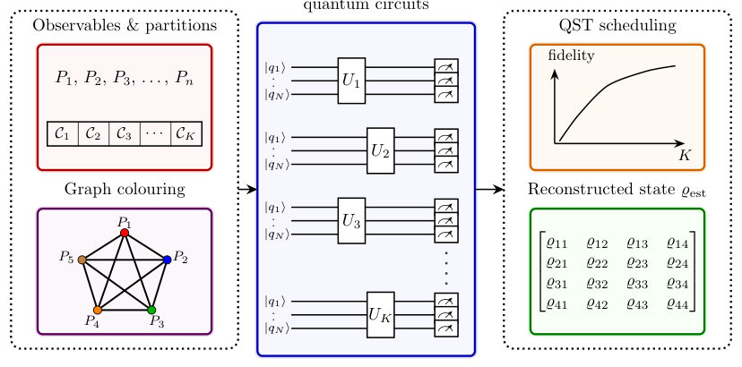
<figcaption class="paper-figure-caption"><b>Fig 1.</b> Figure 1. Schematic workflow of measurement scheduling for quantum state tomography using graph coloring. First, an informationally complete set of quantum observables {P1, P2, P3, . . . , Pn} is partitioned, using heuristic GC algorithms, into K commuting subsets C1, C2, . . . , CK, which correspond to measurement settings. For each such subset (color class), corresponding quantum circuits with unitaries {U1, U2, U3, . . . , UK} are compiled. The resulting measurement data are acquired and processed using a scheduling strategy, illustrated as the fidelity improving with the number of executed settings K, to reconstruct an estimate ϱest of the density matrix describing the system state.</figcaption>
</figure>
<figure class="paper-figure-card">
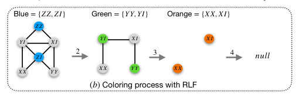
<figcaption class="paper-figure-caption"><b>Fig 2.</b> Figure 2. Pictorial representation of the graph coloring pro- cess using (a) DSATUR (upper panel) and (b) RLF (bot- tom panel) applied to the two-qubit Pauli-operator subset P = {XI, Y I, ZI, XX, Y Y, ZZ} as an example.</figcaption>
</figure>
<figure class="paper-figure-card">
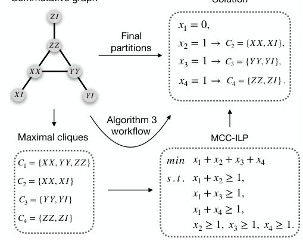
<figcaption class="paper-figure-caption"><b>Fig 3.</b> Figure 3. Illustration of the minimum-clique-cover (MCC) formulation of operator partitioning using an approach based on integer linear programming (ILP), demonstrated for the operator set P = {XI, Y I, ZI, XX, Y Y, ZZ} (the same as in Fig. 2). The procedure begins by constructing the cor- responding commutation graph, followed by identification of maximal cliques. The MCC is then formulated as an ILP optimization task using Algorithm 3 in Appendix A, and the final partitions are obtained by solving the resulting ILP.</figcaption>
</figure>
<figure class="paper-figure-card">
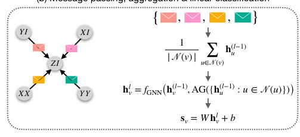
<figcaption class="paper-figure-caption"><b>Fig 4.</b> Figure 4. Graphical overview of the GNN-based GC frame- work. (a) Initial graph representation and node-feature em- bedding. (b) Internal GNN processing pipeline consisting of message passing, neighborhood aggregation, and linear clas- sification. (c) Final GC solution, where nodes are assigned to color classes corresponding to mutually commuting operator partitions.</figcaption>
</figure>
<figure class="paper-figure-card">
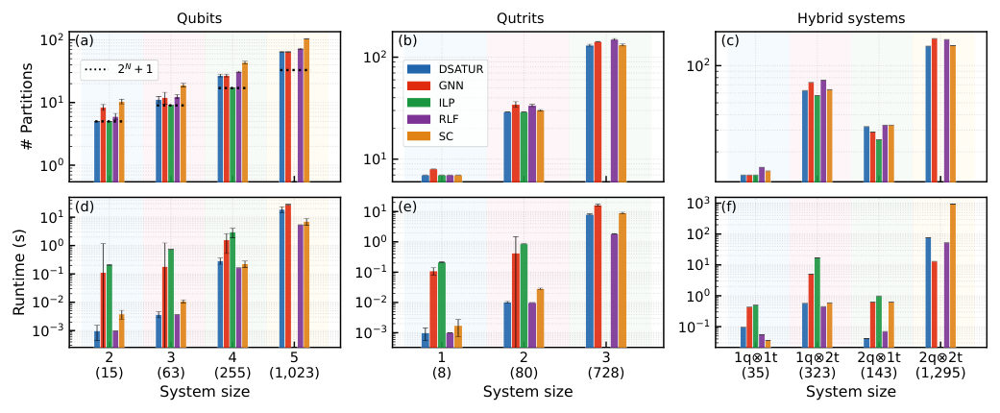
<figcaption class="paper-figure-caption"><b>Fig 5.</b> Figure 5. Benchmarking of graph-coloring (GC) algorithms for operator partitioning. (a)–(c) The number of partitions obtained and (d)–(f) the corresponding computational runtime for five different GC algorithms (shown in different colors) across multi- qubit systems [first column, i.e., (a) and (d)], multi-qutrit systems [second column, i.e., (b) and (e)], and hybrid systems with both qubits and qutrits [third column, i.e., (c) and (f)]. In all panels, the x axis shows the system size (number of qubits and qutrits), with the total number of operators indicated in parentheses below each case. In panel (a), the dotted black line indicates the optimal reference value, 2N + 1 partitions, for...</figcaption>
</figure>
</div>

<p><strong>Summary.</strong> This paper introduces a novel, efficient computational framework to optimize Quantum State Tomography (QST) by reformulating the measurement setting selection as a Graph Coloring problem. By applying heuristic graph coloring algorithms, the authors drastically reduce the number of required measurements compared to exhaustive methods. This enables practical, priority-based scheduling for characterizing complex quantum systems on NISQ devices.</p>
<p><strong>Why it may be interesting.</strong> It provides a scalable, computational framework for optimizing the data acquisition stage of quantum characterization, which is crucial for experimental quantum computing platforms.</p>
<details>
<summary>Detailed structure</summary>
<p><strong>Main problem.</strong> The core problem is efficiently determining the minimal and prioritized set of measurement settings required for Quantum State Tomography (QST) for an arbitrary set of operators.</p>
<p><strong>Main result.</strong> The framework successfully uses Graph Coloring heuristics to substantially reduce the number of required measurement settings compared to brute-force methods, enabling priority-based scheduling that maximizes information gain.</p>
<p><strong>Method.</strong> The problem is reformulated as a Graph Coloring (GC) problem, solved using efficient heuristic algorithms like DSATUR and RLF, followed by synthesizing Clifford circuits for joint measurements.</p>
<p><strong>Model / system.</strong> The work is validated on multi-qubit (up to five qubits), multi-qutrit (up to three qutrits), and hybrid qubit-qutrit systems, focusing on reconstructing the density matrix $\rho$.</p>
<p><strong>Key observables.</strong> The estimated density matrix ($\rho_{est}$), the number of required measurement settings (color classes), and the information gain per experiment.</p>
<p><strong>Important parameters / regimes.</strong> The dimensionality of the Hilbert space (up to 5 qubits/3 qutrits) and the number of operators to be measured.</p>
<p><strong>Assumptions / limitations.</strong> The primary assumption is that the problem can be effectively modeled and solved using graph coloring heuristics, bypassing the intractable nature of brute-force search.</p>
<p><strong>Figures summary.</strong> Figure 1 illustrates the workflow: partitioning observables via GC, compiling quantum circuits, and using scheduling to reconstruct the density matrix, showing fidelity improvement with more settings.</p>
<p><strong>Paper structure.</strong> The paper reviews standard QST, introduces the GC formulation for measurement setting optimization, and details the measurement-scheduling strategy for maximizing information gain.</p>
</details>
<details>
<summary>Abstract</summary>
<p>A key task in many quantum-computing applications, e.g., quantum simulation and quantum state tomography (QST), is to partition an arbitrary set of operators into mutually commuting subsets for efficient measurements. However, brute-force approaches to this task quickly become intractable as the number and dimensionality of operators grow. Here, we reformulate operator partitioning as a graph-coloring (GC) problem and develop an efficient computational framework to solve it, balancing accuracy and efficiency. Our framework enables leveraging a range of GC algorithms, which we benchmark for operator partitioning. Then, we demonstrate their utility in optimizing QST experiments, where determining non-overlapping data acquisition settings for QST is a major challenge, and prioritizing among these settings, i.e., selecting the experiments that provide the most information. We further show how to perform these experiments by synthesizing Clifford circuits for joint measurement of commuting Pauli operators in multi-qubit systems. We validate our framework across multi-qubit (up to five qubits), multi-qutrit (up to three qutrits), and hybrid qubit-qutrit systems. Our results show that heuristic GC methods substantially reduce the number of required measurement settings for QST and enable priority-based scheduling that maximizes the information gain per experiment. The optimization converges within minutes on a student-grade laptop, providing speedups of several orders of magnitude over brute-force methods already for these relatively small quantum systems. This demonstrates the potential of GC heuristics as a scalable and practical tool for characterization of noisy intermediate-scale quantum devices. We have made the Python implementation of our GC framework to optimize and schedule QST experiments publicly available at https://github.com/ssm8015/QST_GT.git.</p>
</details>
<p><sub><a href="#top">↑ back to top</a></sub></p>

<p><a id="paper-2609.01940"></a></p>
<h3 id="non-additivity-of-microwave-shielded-interactions-between-dipolar-molecules"><a href="http://arxiv.org/abs/2609.01940v1">Non-Additivity of Microwave-Shielded Interactions between Dipolar Molecules</a></h3>
<p><strong>Authors:</strong> Fabian Prieschl, Andreas Schindewolf, Robert E. Zillich<br>
<strong>Type:</strong> theory · <strong>Category:</strong> quantum gases · <strong>PDF:</strong> <a href="https://arxiv.org/pdf/2609.01940v1">https://arxiv.org/pdf/2609.01940v1</a><br>
<strong>Analysis basis:</strong> full PDF text, analyzed in chunks
<strong>Topic relevance:</strong> <code>analog quantum simulation</code> <strong>3/5</strong></p>
<div class="figure-strip-hint">↔ Scroll figures horizontally</div>
<div class="paper-figures-scroll">
<figure class="paper-figure-card">
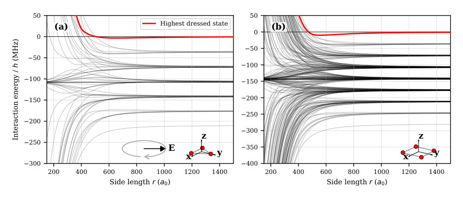
<figcaption class="paper-figure-caption"><b>Fig 1.</b> FIG. 1. Overview of all adiabatic PESs in the xy-plane for 3 dipoles forming an equilateral triangle of side length r (a) and of 4 dipoles forming a square of side length r (b). The highest-energy adiabatic surface is highlighted in red. The insets depict the respective molecular configurations in the coordinate frame. Panel (a) additionally illustrates the microwave electric field vector E rotating in the xy-plane.</figcaption>
</figure>
<figure class="paper-figure-card">
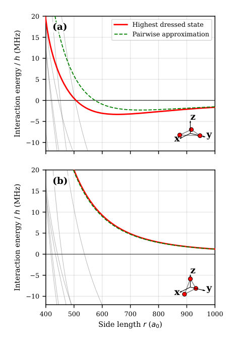
<figcaption class="paper-figure-caption"><b>Fig 2.</b> FIG. 2. Interaction energy of three dipoles arranged in an equilateral triangle in the xy-plane (a) and xz-plane (b). The solid red curve represents the exact highest-energy dressed state, while the dashed green curve shows the pairwise ap- proximation.</figcaption>
</figure>
<figure class="paper-figure-card">
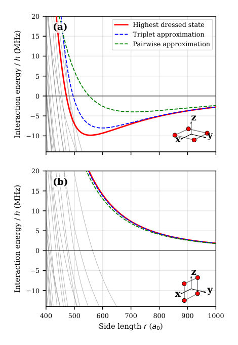
<figcaption class="paper-figure-caption"><b>Fig 3.</b> FIG. 3. Interaction energy of four dipoles arranged in a square in the xy-plane (a) and xz-plane (b). The solid red curve corresponds to the exact highest-energy dressed state. The dashed green and blue curves represent the pairwise and triplet approximations, respectively.</figcaption>
</figure>
<figure class="paper-figure-card">
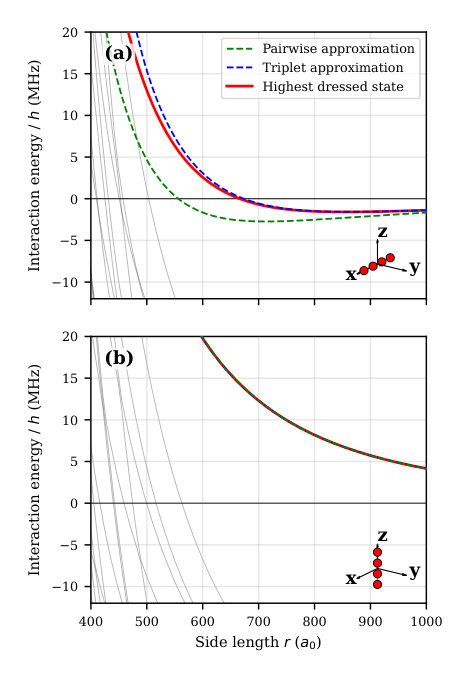
<figcaption class="paper-figure-caption"><b>Fig 4.</b> FIG. 4. Interaction energy of four dipoles arranged in a linear chain along the x-axis (a) and z-axis (b). The solid red curve represents the exact highest-energy dressed state, while the dashed green and blue curves show the pairwise and triplet approximations, respectively.</figcaption>
</figure>
<figure class="paper-figure-card">
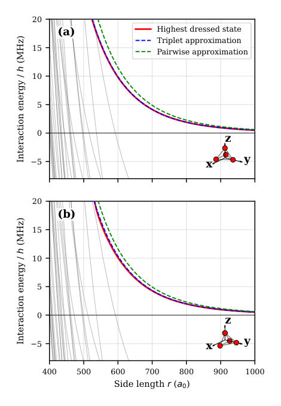
<figcaption class="paper-figure-caption"><b>Fig 5.</b> FIG. 5. Interaction energy of four dipoles arranged in a reg- ular tetrahedron with the base oriented in the xy-plane (a) and xz-plane (b). The solid red curve represents the exact highest-energy dressed state, while the dashed green and blue curves show the pairwise and triplet approximations, respec- tively.</figcaption>
</figure>
</div>

<p><strong>Summary.</strong> This theoretical work demonstrates that the effective interactions between microwave-shielded dipolar molecules are not simply the sum of pairwise interactions. By analyzing the many-body potential energy for small clusters, the authors show that non-additive, many-body effects dominate the attractive potential well, which is critical for forming self-bound quantum clusters.</p>
<p><strong>Why it may be interesting.</strong> This work directly addresses the limitations of simple mean-field or pairwise interaction models in strongly correlated quantum systems, which is crucial for designing stable quantum matter like dipolar BECs.</p>
<details>
<summary>Detailed structure</summary>
<p><strong>Main problem.</strong> The study investigates the validity of assuming pairwise additivity when calculating the effective interactions between multiple microwave-shielded dipolar molecules.</p>
<p><strong>Main result.</strong> The pairwise approximation fails for planar configurations, as many-body effects significantly deepen the attractive potential well, necessitating the use of the full many-body potential energy.</p>
<p><strong>Method.</strong> The authors calculated the many-body Potential Energy Surface (PES) for three and four molecules, comparing the full calculation against approximations based only on pair interactions.</p>
<p><strong>Model / system.</strong> The system consists of dipolar molecules interacting via dipole-dipole forces, whose interactions are modified (shielded) by an external microwave field. The analysis uses the Born-Oppenheimer approximation and focuses on the resulting effective many-body Hamiltonian.</p>
<p><strong>Key observables.</strong> The depth and position of the attractive potential well, and the repulsive barrier, as a function of molecular geometry (planar vs. out-of-plane).</p>
<p><strong>Important parameters / regimes.</strong> The number of molecules (N=3, 4), the geometry (planar vs. out-of-plane), and the strength of the microwave field.</p>
<p><strong>Assumptions / limitations.</strong> The analysis is restricted to single-MW shielding and assumes the validity of the Rotating Wave Approximation (RWA) for time-averaging.</p>
<p><strong>Figures summary.</strong> Figures illustrate the PESs for 3 dipoles in an equilateral triangle and 4 dipoles in a square, showing the dependence on side length and highlighting the many-body nature of the attractive well.</p>
<p><strong>Paper structure.</strong> The paper builds from the general Hamiltonian formulation to the effective time-independent Hamiltonian via RWA, then systematically compares the full many-body PES against lower-order approximations (pairwise, triplet) for small clusters.</p>
</details>
<details>
<summary>Abstract</summary>
<p>Theoretical models of the effective interactions between microwave-shielded polar molecules typically rely on the assumption of pairwise additivity. In this work, we test the validity of this pairwise approximation by evaluating the exact many-body potential energy for configurations of three and four molecules. We demonstrate that this approximation fails for molecule configurations in the plane of the circularly polarized microwave field. In these planar geometries, many-body effects significantly increase the depth of the attractive potential well and shift the position of the repulsive barrier. Although out-of-plane interactions in three-dimensional arrangements weaken this non-additivity, the effective interactions between microwave-shielded dipoles are not a simple sum of pair interactions. In particular, their attractive well, crucial for self-bound clusters, can only be described by the full many-body potential energy.</p>
</details>
<p><sub><a href="#top">↑ back to top</a></sub></p>

<p><a id="paper-2609.02488"></a></p>
<h3 id="precise-spectral-asymptotics-exponential-localization-and-spectral-gap-estimates-for-the-three-boson-lattice-schrodinger-operator"><a href="http://arxiv.org/abs/2609.02488v1">Precise spectral asymptotics, exponential localization, and spectral gap estimates for the three-boson lattice Schrödinger operator</a></h3>
<p><strong>Authors:</strong> Abdikhurayra Toshturdiev, Abdumalik Eshniyozov, Janikul Abdullaev, Mikhail Dolgopolov<br>
<strong>Type:</strong> theory · <strong>Category:</strong> other · <strong>PDF:</strong> <a href="https://arxiv.org/pdf/2609.02488v1">https://arxiv.org/pdf/2609.02488v1</a><br>
<strong>Analysis basis:</strong> full PDF text, analyzed in chunks
<strong>Topic relevance:</strong> <code>analog quantum simulation</code> <strong>3/5</strong></p>
<div class="figure-strip-hint">↔ Scroll figures horizontally</div>
<div class="paper-figures-scroll">
<figure class="paper-figure-card">
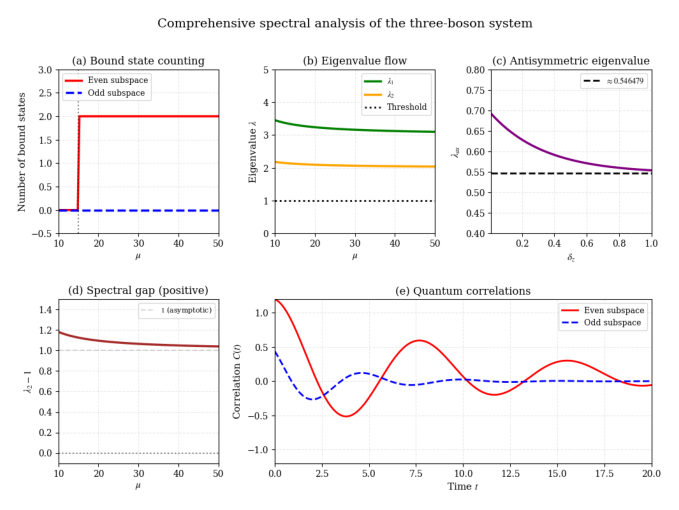
<figcaption class="paper-figure-caption"><b>Fig 1.</b> Figure 1. Comprehensive spectral analysis of the three-boson system. (a) Bound state counting: even subspace (solid red) supports exactly two bound states for 𝜇&gt; 15, odd subspace (dashed blue) has zero bound states. (b) Eigenvalue flow (schematic illustration, qualitatively consistent with Lemma 3.5; not numerically computed): 𝜆1 (green) and 𝜆2 (orange) above Birman–Schwinger threshold (black dotted line), with 𝜆2 →2 + 𝑂(1/𝜇) asymptotically. (c) Antisymmetric eigenvalue 𝜆𝑎𝑠(purple) converges to its theoretical limit ≈0.546479 (horizontal dashed line), given by the</figcaption>
</figure>
<figure class="paper-figure-card">
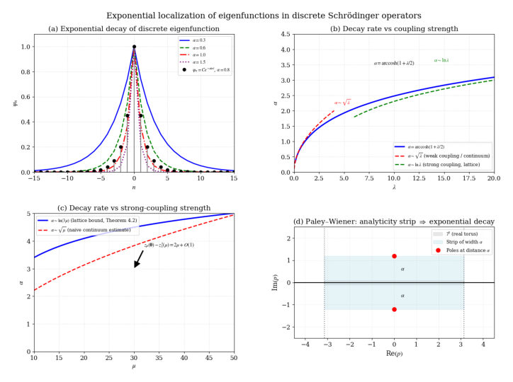
<figcaption class="paper-figure-caption"><b>Fig 2.</b> Figure 2. Mathematical foundations of exponential localization for discrete Schrödinger operators. (a) Exponential decay of the eigenfunction 𝜓𝑛= 𝐶𝑒−𝛼|𝑛| for the one-dimensional delta-potential 𝐻𝜆= −Δ −𝜆𝛿𝑛,0. Different curves correspond to different decay rates 𝛼, showing that the eigen- function decays exponentially on the discrete lattice Z. This provides an explicit counterexample to the claim that exponential localization is exclusively a continuous-space phenomenon. (b) Decay rate 𝛼as a function of the coupling strength 𝜆. The exact relation 𝜆= 2(cosh 𝛼−1) (solid blue) is shown together with its two asymptotic regimes: 𝛼∼ √</figcaption>
</figure>
<figure class="paper-figure-card">
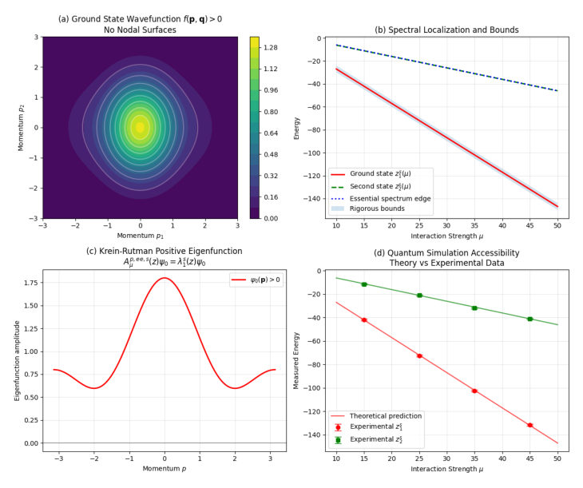
<figcaption class="paper-figure-caption"><b>Fig 3.</b> Figure 3. Fundamental positivity properties and spectral structure of the three-boson system. (a) Strict positivity of the ground state wavefunction. (b) Rigorous spectral bounds 𝑧𝑠 1(𝜇) ∈ (−3𝜇, −3𝜇+ 6). (c) Strictly positive eigenfunction 𝜓0 via Krein–Rutman. (d) Experimental accessibility.</figcaption>
</figure>
<figure class="paper-figure-card">
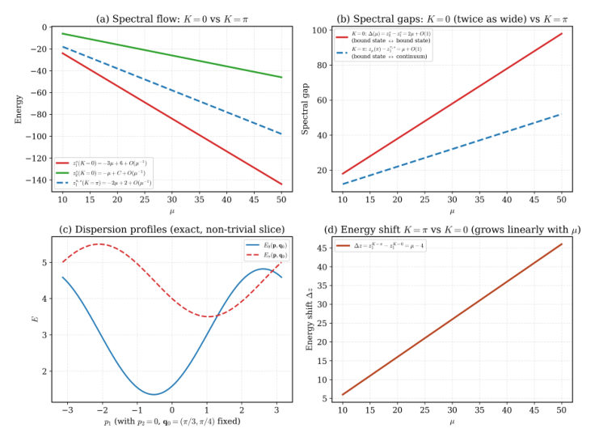
<figcaption class="paper-figure-caption"><b>Fig 4.</b> Figure 4. Comparison of spectral properties for total quasimomentum K = 0 and K = 𝝅. (a) Spectral flow: 𝑧𝑠 1(𝜇) = −3𝜇+ 6 + 𝑂(𝜇−1), 𝑧𝑠 2(𝜇) = −𝜇+ 𝐶+ 𝑂(𝜇−1) for K = 0 (solid); 𝑧𝜋,𝑠 1 (𝜇) = −2𝜇+ 6 + 𝑂(𝜇−1) for K = 𝝅(dashed). (b) Spectral gaps of a fundamentally differ- ent type: Δ(𝜇) = 𝑧𝑠 2 −𝑧𝑠 1 = 2𝜇+ 𝑂(1) at K = 0 is a bound-state-to-bound-state gap, whereas 𝑧𝜇(𝝅) −𝑧𝜋,𝑠 1 (𝜇) = 𝜇−2 + 𝑂(𝜇−1) at K = 𝝅is a bound-state-to-continuum gap — asymptot- ically half as wide. (c) Exact dispersion profiles 𝐸0(p, q0) and 𝐸𝝅(p, q0) along 𝑝1 at fixed non-trivial q0 = (𝜋/3, 𝜋/4) (the choice q0 = 0 is degenerate, since 𝐸𝝅(p, 0) ≡4 identically by 𝜀(p) + 𝜀(𝝅−p) = 4). (d) Energy shift Δ𝑧= 𝑧𝜋,𝑠 1 (𝜇) −𝑧𝑠 1(𝜇) =...</figcaption>
</figure>
<figure class="paper-figure-card">
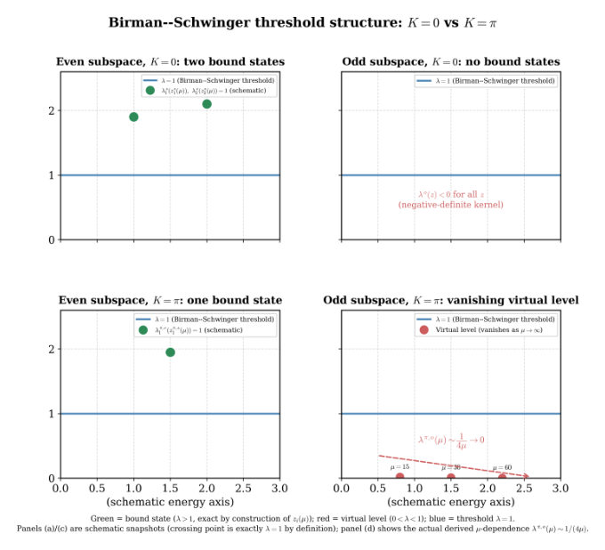
<figcaption class="paper-figure-caption"><b>Fig 5.</b> Figure 5. Schematic Birman–Schwinger threshold structure by symmetry sector. Panels (a)–(c) show, at a representative coupling, whether the leading eigenvalue of the corresponding sector’s principal-part kernel lies above the threshold 𝜆= 1 (green, bound state) or is negative/non-existent (odd sector at K = 0). Panel (d) shows the actual derived 𝜇-dependence of the K = 𝝅odd-sector eigenvalue, 𝜆𝜋,𝑜(𝜇) ∼1/(4𝜇) (Section 5.3.5), explicitly visualizing that this virtual level vanishes as 𝜇→∞rather than persisting at a fixed value.</figcaption>
</figure>
</div>

<p><strong>Summary.</strong> This theoretical work provides a detailed spectral analysis of three interacting bosons on a 2D lattice, determining the asymptotic behavior of bound states and the spectral gap in the strong-coupling limit. Using advanced spectral methods, the authors establish precise energy formulas and prove exponential localization of the ground state. These results are highly relevant for understanding quantum simulation experiments using optical lattices.</p>
<p><strong>Why it may be interesting.</strong> The rigorous spectral analysis of few-body systems in optical lattices provides fundamental insights into quantum many-body physics, directly impacting the theoretical understanding of quantum simulation.</p>
<details>
<summary>Detailed structure</summary>
<p><strong>Main problem.</strong> The paper investigates the spectral properties, including bound states and spectral gaps, of the three-boson Schrödinger operator on a two-dimensional lattice.</p>
<p><strong>Main result.</strong> The study derives precise asymptotic formulas for the bound state energies at zero and pi quasimomenta, and establishes exponential localization of the ground-state wavefunction in the strong-coupling limit.</p>
<p><strong>Method.</strong> The analysis employs advanced spectral theory tools such as the Birman-Schwinger principle, invariant subspace decomposition, the discrete Agmon comparison method, and the Krein-Rutman theorem.</p>
<p><strong>Model / system.</strong> The model is a three-boson system interacting via pairwise contact interactions on the two-dimensional integer lattice ($\mathbb{Z}^2$). The Hamiltonian is analyzed in both real space and momentum space.</p>
<p><strong>Key observables.</strong> Bound state energies ($z_s(\mu)$), spectral gap ($\Delta(\mu)$), and the decay rate ($\alpha(\mu)$) of the ground-state wavefunction.</p>
<p><strong>Important parameters / regimes.</strong> Interaction strength ($\mu$) in the strong-coupling limit ($\mu 	o \infty$), and the total quasimomentum ($K=0$ and $K=\pi$).</p>
<p><strong>Assumptions / limitations.</strong> The analysis relies on systematic invariant subspace decomposition and rigorous remainder estimates to control strong-coupling asymptotics; the sharp asymptotic rate for localization is conjectured.</p>
<p><strong>Figures summary.</strong> Not specified, but the notes mention Table 1 comparing spectral properties across different few-body lattice systems, and Table 5 comparing Fredholm determinant asymptotics.</p>
<p><strong>Paper structure.</strong> The paper systematically analyzes the Hamiltonian via direct integral decomposition over quasimomentum $K$, focusing on the extremal points $K=0$ and $K=\pi$ to derive asymptotic results for bound states and spectral gaps.</p>
</details>
<details>
<summary>Abstract</summary>
<p>We study the three-boson Schrodinger operator on the two-dimensional integer lattice with pairwise contact interactions. First, we obtain precise asymptotics of the two bound states below the essential spectrum at zero total quasimomentum in the strong-coupling limit mu to infinity: the ground state energy is -3 mu + 6 + O(1/mu), and the first excited state energy is - mu + C + O(1/mu), where C = 4 - delta approximately 3.96458, with delta determined by the transcendental equation b0(delta) = 1/(1+delta) involving the lattice Green's function. The associated spectral gap is 2 mu + O(1). Second, using the discrete Agmon comparison method and the Paley-Wiener theorem, we establish exponential localization of the ground-state wavefunction with a logarithmic upper bound on the decay rate alpha(mu) at most ln(3 mu) + O(1/mu), reflecting the bounded nature of the lattice dispersion; the sharp asymptotic rate is conjectured. Third, at quasimomentum pi, the parity symmetry is preserved, but the odd quadratic form becomes positive definite with a unique eigenvalue of order 1/mu that never reaches the Birman-Schwinger threshold, so the odd subspace yields only a virtual level. The even subspace supports exactly one bound state with energy -2 mu + 6 + 8/mu + O(1/mu^2), and the spectral gap to the essential spectrum is mu - 2 - 8/mu + O(1/mu^2). The reduction from two bound states at zero to one at pi preserves the total spectral flow and is a lattice-specific phenomenon. Our approach uses an invariant subspace decomposition of the Birman-Schwinger operator and the Krein-Rutman theorem to guarantee uniqueness and strict positivity of the ground state. These results have direct implications for quantum simulation of few-boson systems in optical lattices.</p>
</details>
<p><sub><a href="#top">↑ back to top</a></sub></p>

<p><a id="paper-2609.02186"></a></p>
<h3 id="quantum-meanflow-single-shot-generative-sampling-on-nisq-hardware"><a href="http://arxiv.org/abs/2609.02186v1">Quantum MeanFlow: single-shot generative sampling on NISQ hardware</a></h3>
<p><strong>Authors:</strong> Ashish Joshi, Eshaan Mistry, Takahiko Koyama<br>
<strong>Type:</strong> both · <strong>Category:</strong> quantum information and computing · <strong>PDF:</strong> <a href="https://arxiv.org/pdf/2609.02186v1">https://arxiv.org/pdf/2609.02186v1</a><br>
<strong>Analysis basis:</strong> full PDF text, analyzed in chunks
<strong>Topic relevance:</strong> <code>QC/QI experiment</code> <strong>3/5</strong></p>
<div class="figure-strip-hint">↔ Scroll figures horizontally</div>
<div class="paper-figures-scroll">
<figure class="paper-figure-card">
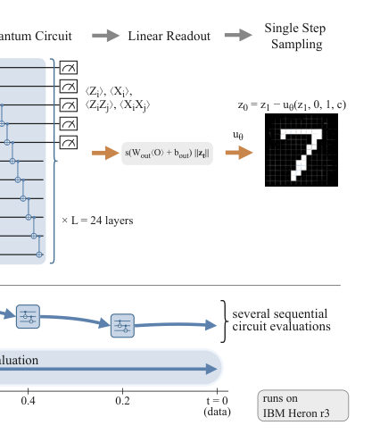
<figcaption class="paper-figure-caption"><b>Fig 1.</b> Figure 1: Overview of the quantum flow matching (QFM) and quantum MeanFlow (QMF) models. We train both models on the MNIST dataset. A classical autoen- coder provides the data latent vectors, which are the inputs for a parameterized quantum circuit. This circuit learns the velocity fields between the noise and data distribution. QFM requires many sequential evaluations of the trained circuit for sampling while QMF is designed to sample with a single circuit evaluation per mea- surement basis.</figcaption>
</figure>
<figure class="paper-figure-card">
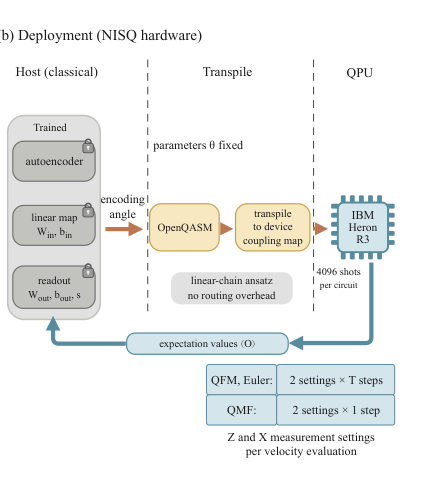
<figcaption class="paper-figure-caption"><b>Fig 2.</b> Figure 2: Training and sampling pipeline. (a) Training procedure for the QFM and QMF models. Both models share the same classical backbone, with an autoencoder providing the data latent vector. The quantum circuit in QFM learns the instan- taneous velocity while in QMF, it learns the average velocity. (b) Once the models are trained, sampling can be performed on QPU.</figcaption>
</figure>
<figure class="paper-figure-card">
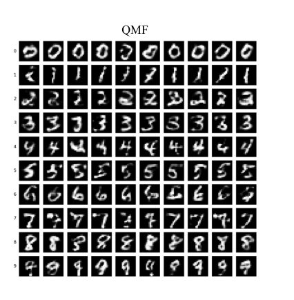
<figcaption class="paper-figure-caption"><b>Fig 3.</b> Figure 3: Samples generated by the QFM model (left) and the QMF model (right) with statevector simulation. For QFM sampling, we used 60 time steps and Heun integrator, while the QMF sampling is done with a single step.</figcaption>
</figure>
<figure class="paper-figure-card">
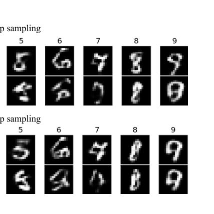
<figcaption class="paper-figure-caption"><b>Fig 4.</b> Figure 4: Samples generated on QPU compared with those obtained from the simu- lator. (a) QFM samples with 5 time steps and Euler integrator. (b) QMF single-step sampling. In both (a) and (b), top row shows samples generated on the simulator (sim) and the bottom row shows samples generated on the quantum hardware (hw).</figcaption>
</figure>
<figure class="paper-figure-card">
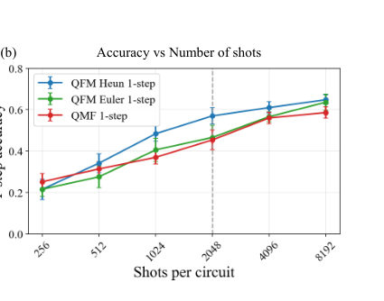
<figcaption class="paper-figure-caption"><b>Fig 5.</b> Figure 5: Single-step sampling performance as a function of the number of shots. (a) FID and (b) accuracy of both the QFM and QMF models. The dashed vertical line indicates the number of shots when single-step QFM using Heun’s method (two circuit evaluation per step per measurement basis) begins to generate higher quality images than single-step QMF sampling.</figcaption>
</figure>
</div>

<p><strong>Summary.</strong> This paper introduces Quantum MeanFlow (QMF), a novel quantum generative model designed to overcome the sequential circuit overhead of standard Quantum Flow Matching (QFM) on NISQ devices. By learning the average velocity over a time interval, QMF enables single-step sample generation, making quantum generative modeling significantly more viable in practice. The work demonstrates that this single-shot approach maintains competitive performance while drastically reducing quantum resource consumption.</p>
<p><strong>Why it may be interesting.</strong> It directly addresses the practical implementation gap between theoretical quantum algorithms and current NISQ hardware constraints by proposing a fundamentally different, more efficient sampling mechanism.</p>
<details>
<summary>Detailed structure</summary>
<p><strong>Main problem.</strong> The primary challenge is developing efficient generative sampling methods for quantum computation that overcome the high cost and sequential nature of multi-step sampling on Noisy Intermediate-Scale Quantum (NISQ) hardware.</p>
<p><strong>Main result.</strong> The proposed Quantum MeanFlow (QMF) formulation allows for single-step sample generation, significantly reducing the required quantum circuit evaluations per generated sample compared to standard Quantum Flow Matching (QFM).</p>
<p><strong>Method.</strong> QMF is introduced as the quantum analogue of MeanFlow, learning the average velocity over a time interval rather than the instantaneous velocity, enabling a single-shot sampling process.</p>
<p><strong>Model / system.</strong> The models utilize Parameterized Quantum Circuits (PQCs) to learn velocity fields in a latent space derived from data like MNIST. The process is benchmarked on IBM quantum computers, operating within the framework of quantum generative models.</p>
<p><strong>Key observables.</strong> Image quality (compared across single-step QMF, multi-step QFM, and single-step QFM), and the number of quantum circuit evaluations required per sample.</p>
<p><strong>Important parameters / regimes.</strong> The latent space dimension (32-dimensional vector), the number of time steps (for comparison), and the quantum circuit depth/ansatz parameters.</p>
<p><strong>Assumptions / limitations.</strong> The primary assumption is that reformulating the generative process to use average velocity (QMF) can circumvent the hardware limitations imposed by sequential circuit execution required by instantaneous velocity methods (QFM).</p>
<p><strong>Figures summary.</strong> The figures compare the sampling quality and efficiency of QFM versus QMF, highlighting QMF's single-shot capability.</p>
<p><strong>Paper structure.</strong> The paper introduces the limitations of sequential QFM sampling, proposes QMF based on MeanFlow theory, details the training using the MeanFlow identity loss, and benchmarks the method on MNIST, concluding with a comparison of computational cost.</p>
</details>
<details>
<summary>Abstract</summary>
<p>Quantum generative models offer a promising framework for exploring whether quantum computation can enhance generative machine learning. Flow matching is a generative method in which samples are generated by transporting a simple, known distribution to the target data distribution with a learned velocity field. Its quantum counterpart, known as quantum flow matching (QFM), was introduced recently, and, like its classical counterpart, requires integrating an ordinary differential equation over many time steps during inference. As each step requires the output from the previous step, the circuit submission is sequential and a drawback on quantum computers as they have high input/output costs. To alleviate this problem, we introduce Quantum MeanFlow (QMF), the quantum analogue of the MeanFlow formulation, which allows single-step sample generation. While the QFM learns an instantaneous velocity field at each time step, QMF learns the average velocity over a time interval. We use a parameterized quantum circuit to learn these velocity fields and benchmark the two methods on the MNIST dataset. We show that while single-step QMF has lower image quality compared to multi-step QFM, it performs better than the single-step QFM sampling at every shot count. Both of our models are executed on IBM quantum computers and best-of-N rejection sampling recovers most of the accuracy lost to device noise without modifying the circuit. This is especially advantageous for QMF which has only one circuit evaluation per image. Here, We establish QMF as a viable method for single-step quantum generative sampling, saving on quantum circuit evaluations per generated sample.</p>
</details>
<p><sub><a href="#top">↑ back to top</a></sub></p>

<p><a id="paper-2609.01744"></a></p>
<h3 id="reliable-sample-level-quantum-error-mitigation-via-dominance-aware-clustering"><a href="http://arxiv.org/abs/2609.01744v1">Reliable Sample-Level Quantum Error Mitigation via Dominance-Aware Clustering</a></h3>
<p><strong>Authors:</strong> Mohsen Ghodrati, Kausthubh Chandramouli, Dror Baron<br>
<strong>Type:</strong> theory · <strong>Category:</strong> quantum information and computing · <strong>PDF:</strong> <a href="https://arxiv.org/pdf/2609.01744v1">https://arxiv.org/pdf/2609.01744v1</a><br>
<strong>Analysis basis:</strong> full PDF text, analyzed in chunks
<strong>Topic relevance:</strong> <code>quantum measurements</code> <strong>3/5</strong></p>
<div class="figure-strip-hint">↔ Scroll figures horizontally</div>
<div class="paper-figures-scroll">
<figure class="paper-figure-card">
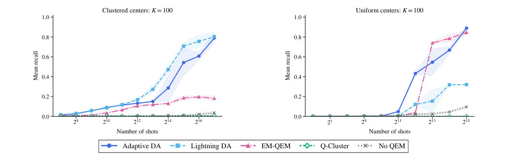
<figcaption class="paper-figure-caption"><b>Fig 1.</b> Fig. 1. Unknown-K center recovery for n = 100 and K = 100. Left: clustered centers. Right: uniformly drawn centers. Curves show mean recall and 95% confidence intervals over five independent streams. The clustered and uniform sweeps end at S = 131,072 and S = 32,768, respectively.</figcaption>
</figure>
</div>

<p><strong>Summary.</strong> This work proposes a novel, classical post-processing technique called dominance-aware (DA) refinement for Quantum Error Mitigation. It tackles the difficult problem of recovering specific quantum states (bitstrings) from noisy measurement distributions. By combining responsibility thresholding with a local dominance screen, the method significantly improves the accuracy of center recovery in simulated quantum optimization tasks.</p>
<p><strong>Why it may be interesting.</strong> While focused on classical post-processing, the rigorous statistical framework for identifying underlying quantum states from noisy measurements is highly relevant to understanding the limitations and potential of quantum characterization techniques.</p>
<details>
<summary>Detailed structure</summary>
<p><strong>Main problem.</strong> The paper addresses the challenge of performing reliable quantum error mitigation (QEM) when the goal is to recover specific bitstrings (samples) from noisy measurements, rather than just estimating expectation values.</p>
<p><strong>Main result.</strong> The proposed dominance-aware (DA) refinement, combining responsibility thresholding and a local dominance screen, successfully recovers true centers in simulated MaxCut-QAOA experiments, significantly outperforming standard clustering methods.</p>
<p><strong>Method.</strong> The core method involves formulating the problem as a mixture model and applying DA refinement, which uses source responsibilities and a dominance score to ensure that majority voting recovers the correct center with exponentially decreasing error probability.</p>
<p><strong>Model / system.</strong> The model assumes the measured probability mass is a mixture of contributions from several latent, task-relevant bitstrings (centers), each associated with a source and characterized by specific bit-flip error rates.</p>
<p><strong>Key observables.</strong> Dominance Score ($\Delta_A^k$), Precision ($    ext{P}_C$), Recall ($ ext{R}_C$), and the combined F1 score ($ ext{F}_C^1$).</p>
<p><strong>Important parameters / regimes.</strong> The dimensionality of the bitstring ($n$), the number of centers ($K$), and the noise parameters (bit-flip rates $\epsilon_{k,i}$).</p>
<p><strong>Assumptions / limitations.</strong> The dominance condition (source $k$ contributing $>50\%$ probability mass at every coordinate) is a sufficient, but not necessary, condition for successful center recovery.</p>
<p><strong>Figures summary.</strong> The notes do not provide a summary of figures, but the evaluation benchmarks include synthetic $n=10$ streams, QAOA on $n=10$ MaxCut instances, and high-dimensional $n=100$ tests.</p>
<p><strong>Paper structure.</strong> The paper develops the theoretical framework for sample-level QEM, introduces the DA refinement module (combining responsibility thresholding and local dominance screening), and validates this approach through extensive synthetic and simulated QAOA benchmarks.</p>
</details>
<details>
<summary>Abstract</summary>
<p>Many quantum algorithms for classically difficult optimization tasks must return high-quality bitstrings from finitely many circuit executions, whereas most quantum error-mitigation methods target expectation values. We study sample-level recovery when measured probability mass is distributed around multiple latent bitstrings, called centers. Each component of the measured probability mass is called a source and we assume that each center is associated with one source. We identify dominance-at every coordinate, more than half of a retained region's probability mass comes from one source and agrees with its center-as a sufficient condition under which majority voting recovers that center with exponentially decreasing error probability. We show that nearest-center assignment, as used in clustering algorithms such as the $k$-modes algorithm, can fail to produce dominated regions even when the true centers are known. This failure motivates responsibility thresholding and a local dominance screen, whose combination we call dominance-aware (DA) refinement. Synthetic and simulated MaxCut-QAOA experiments show that DA refinement favors precision, while $k$-modes with DA refinement improves overall center recovery. All procedures are classical post-processing and require no additional quantum-circuit executions.</p>
</details>
<p><sub><a href="#top">↑ back to top</a></sub></p>

<p><a id="paper-2609.02443"></a></p>
<h3 id="thermodynamic-electric-toroidal-dipole-and-intrinsic-longitudinal-spin-transport"><a href="http://arxiv.org/abs/2609.02443v1">Thermodynamic Electric Toroidal Dipole and Intrinsic Longitudinal Spin Transport</a></h3>
<p><strong>Authors:</strong> Taisei Yamanaka, Takumi Sato, Satoru Hayami<br>
<strong>Type:</strong> theory · <strong>Category:</strong> strongly correlated electrons · <strong>PDF:</strong> <a href="https://arxiv.org/pdf/2609.02443v1">https://arxiv.org/pdf/2609.02443v1</a><br>
<strong>Analysis basis:</strong> full PDF text, analyzed in chunks
<strong>Topic relevance:</strong> <code>Keldysh / 2PI / non-Gaussian methods</code> <strong>3/5</strong></p>
<div class="figure-strip-hint">↔ Scroll figures horizontally</div>
<div class="paper-figures-scroll">
<figure class="paper-figure-card">
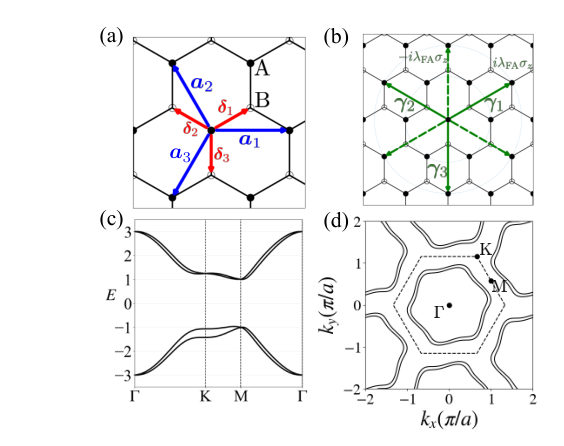
<figcaption class="paper-figure-caption"><b>Fig 1.</b> FIG. 1. (a) Honeycomb structure with the nearest-neighbor and next-nearest-neighbor vectors δi and ai. (b) Schematic representation of the ferroaxial hopping HFA. (c) Band structure for λFA = 0.1. The high-symmetry points are Γ = (0, 0), K = (0.5, 0), M = (0.5, 0.5) in units of the recipro- cal lattice vectors. (d) Constant-energy contour at E = 1.5 for λFA = 0.1. The hexagon represents the first Brillouin zone.</figcaption>
</figure>
<figure class="paper-figure-card">
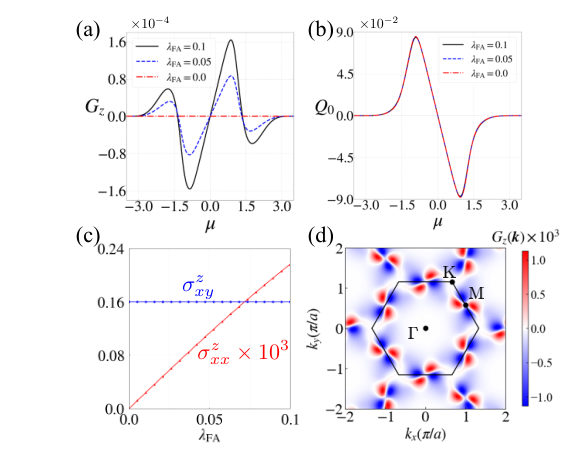
<figcaption class="paper-figure-caption"><b>Fig 2.</b> FIG. 2. Chemical potential dependence of thermodynamic ETD Gz and EM Q0 for λFA = 0.0, 0.05, 0.1 at T = 0.1. (c) λFA dependence of σz xy and σz xx in the insulating regime at T = 0.01. (d) Momentum-resolved contribution Gz(k) at T = 0.01 and µ = −0.5. The hexagon represents first Brillouin zone.</figcaption>
</figure>
<figure class="paper-figure-card">
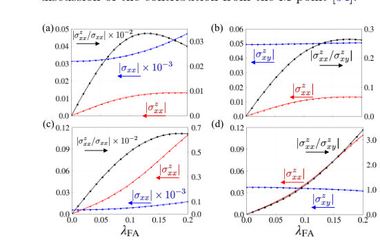
<figcaption class="paper-figure-caption"><b>Fig 3.</b> FIG. 3. Comparison of the longitudinal spin conductivity, spin Hall conductivity, and longitudinal electric conductivity in the metallic regime. (a),(b) Results for µ = 1.5. (c),(d) Results for µ = 1.05.</figcaption>
</figure>
</div>

<p><strong>Summary.</strong> This work develops a thermodynamic theory for the Electric Toroidal Dipole (ETD), a bulk order parameter characterizing ferroaxial electronic phases. By coupling the ETD to the spin-induced polarization, the authors establish a direct, quantitative relationship between the ETD and the intrinsic longitudinal spin conductivity. This provides a new theoretical tool to diagnose and quantify ferroaxial order in crystalline solids.</p>
<p><strong>Why it may be interesting.</strong> While focused on topological/symmetry physics, the rigorous derivation of a bulk, gauge-invariant order parameter and its direct link to a measurable transport coefficient (spin conductivity) provides a powerful theoretical tool for characterizing novel electronic phases in condensed matter systems.</p>
<details>
<summary>Detailed structure</summary>
<p><strong>Main problem.</strong> The paper addresses the challenge of defining a gauge-invariant, bulk thermodynamic order parameter for the Electric Toroidal Dipole (ETD) in periodic crystals, and linking it to intrinsic longitudinal spin transport.</p>
<p><strong>Main result.</strong> The ETD is shown to be a finite order parameter exclusively in ferroaxial phases, and its chemical-potential derivative is directly proportional to the intrinsic longitudinal spin conductivity.</p>
<p><strong>Method.</strong> The authors formulate the ETD thermodynamically by coupling a spatially varying electric field to the relativistic spin-induced electric polarization, utilizing Green's function and Kubo formalism techniques.</p>
<p><strong>Model / system.</strong> The study uses a minimal ferroaxial extension of the Kane--Mele model, which incorporates symmetry-breaking hopping terms ($H_{FA}$) to realize ferroaxial order in a honeycomb lattice.</p>
<p><strong>Key observables.</strong> Electric Toroidal Dipole (ETD, $G_k$), intrinsic longitudinal spin conductivity ($\sigma_{z}^{xx}$), and the longitudinal spin current.</p>
<p><strong>Important parameters / regimes.</strong> The ferroaxial coupling strength ($\lambda_{FA}$), the chemical potential ($\mu$), and the band gap size (controlled by hopping parameters like $t'$).</p>
<p><strong>Assumptions / limitations.</strong> The conventional definition of ETD fails in periodic crystals due to the ill-defined position operator, necessitating a thermodynamic formulation. The analysis also uses semiclassical Boltzmann theory in some contexts.</p>
<p><strong>Figures summary.</strong> Figures illustrate the honeycomb structure and the effect of ferroaxial hopping on the band structure. Subsequent figures show the dependence of the ETD ($G_z$) and spin conductivity ($\sigma_{z}^{xx}$) on the chemical potential and the strength of the ferroaxial coupling.</p>
<p><strong>Paper structure.</strong> The paper first establishes the thermodynamic definition of the ETD. It then applies this framework to the Kane-Mele model, demonstrating that the ETD is non-zero only when ferroaxial symmetry is broken. Finally, it derives a quantitative relationship linking the ETD's derivative to the longitudinal spin conductivity.</p>
</details>
<details>
<summary>Abstract</summary>
<p>Electric toroidal dipoles (ETDs) characterize ferroaxial order, yet their bulk definition in periodic crystals has remained elusive because conventional multipole operators involve the ill-defined position operator. Here we formulate a thermodynamic ETD by coupling a spatially varying electric field to the relativistic spin-induced electric polarization. The resulting expression is gauge invariant and provides a bulk order parameter for ferroaxial phases. We further establish a direct relation between the chemical-potential derivative of the ETD and the intrinsic longitudinal spin conductivity in insulating systems. To demonstrate the formulation, we construct a minimal ferroaxial extension of the Kane--Mele model. The ETD becomes finite exclusively in the ferroaxial phase and is strongly enhanced near a small band gap, accompanied by a sizable longitudinal spin current. Our results establish a thermodynamic theory of ETDs in crystalline solids and identify the longitudinal spin conductivity as a direct transport manifestation of ferroaxial order.</p>
</details>
<p><sub><a href="#top">↑ back to top</a></sub></p>

<p><a id="paper-2609.01951"></a></p>
<h3 id="universal-scaling-and-protocol-dependent-amplitude-in-hybrid-quantum-walks"><a href="http://arxiv.org/abs/2609.01951v1">Universal scaling and protocol-dependent amplitude in hybrid quantum walks</a></h3>
<p><strong>Authors:</strong> Cook Hyun Kim, Jaesub Park, Namshik Han<br>
<strong>Type:</strong> theory · <strong>Category:</strong> statistical mechanics · <strong>PDF:</strong> <a href="https://arxiv.org/pdf/2609.01951v1">https://arxiv.org/pdf/2609.01951v1</a><br>
<strong>Analysis basis:</strong> full PDF text, analyzed in chunks
<strong>Topic relevance:</strong> <code>non-equilibrium universality</code> <strong>3/5</strong></p>
<div class="figure-strip-hint">↔ Scroll figures horizontally</div>
<div class="paper-figures-scroll">
<figure class="paper-figure-card">
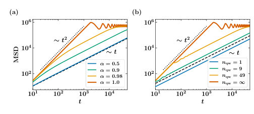
<figcaption class="paper-figure-caption"><b>Fig 1.</b> Figure 1. MSD on the ring of N = 2501 nodes over T = 5×104</figcaption>
</figure>
<figure class="paper-figure-card">
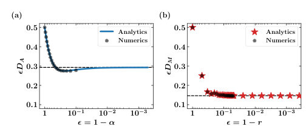
<figcaption class="paper-figure-caption"><b>Fig 2.</b> Figure 2. Rescaled diffusion coefficient εD on the ring (N = 2501) versus the classical admixture ε, logarithmic and decreas- ing toward the quantum limit: ε = 1−α in (a), ε = 1−r in (b). Circles are extracted from simulations (α ≤0.9; nqw ≤19); the solid line in (a) is D(L=2) A from Eq. (30), and the stars in (b) are the exact DM from Eqs. (S23) and (S31) at integer nqw ≤1280. The pole of Eq. (32) appears as a plateau, marked by dashed lines at (2 − √</figcaption>
</figure>
</div>

<p><strong>Summary.</strong> This theoretical work analyzes hybrid quantum walks, which combine quantum and classical random walk steps. By comparing two distinct operational protocols (additive vs. multiplicative), the authors show that while both lead to diffusion, the specific temporal organization dictates the amplitude of the diffusion coefficient in the quantum limit. This highlights that the structure of the quantum-classical coupling is crucial for determining transport dynamics.</p>
<p><strong>Why it may be interesting.</strong> The comparison between the two protocols (QRW-A vs. QRW-M) provides deep insight into how the temporal ordering of quantum and classical operations dictates the macroscopic transport properties, a key concept in open quantum systems.</p>
<details>
<summary>Detailed structure</summary>
<p><strong>Main problem.</strong> The paper compares the universal scaling and protocol-dependent amplitude of diffusion coefficients in hybrid quantum-classical random walks.</p>
<p><strong>Main result.</strong> Both additive and multiplicative hybrid quantum walks exhibit diffusive spreading for any classical admixture, and their diffusion coefficients diverge with a first-order pole in the quantum limit, with the pole amplitudes differing by a factor of two.</p>
<p><strong>Method.</strong> The analysis uses the transfer operator method in momentum space, determining long-time behavior from the leading eigenvalue of the evolution operator for both additive (QRW-A) and multiplicative (QRW-M) protocols.</p>
<p><strong>Model / system.</strong> The system is a hybrid quantum walk on a 1D ring, combining unitary quantum steps (using Hadamard coin) with classical steps. Two protocols are compared: additive (QRW-A) and multiplicative (QRW-M).</p>
<p><strong>Key observables.</strong> Mean Squared Displacement (MSD), transport exponent ($eta$), and the long-time diffusion coefficient ($D$).</p>
<p><strong>Important parameters / regimes.</strong> Quantum admixture ($\alpha$ or $r$), coherence timescales ($t^*_A, t^*_M$), and the ratio of amplitudes.</p>
<p><strong>Assumptions / limitations.</strong> QRW-A requires truncation of the transfer matrix at a finite size $L$, and QRW-M assumes the long-time density matrix approaches a specific form.</p>
<p><strong>Figures summary.</strong> Figure 1 shows the MSD vs. time for both protocols, confirming the transition from ballistic to diffusive spreading.</p>
<p><strong>Paper structure.</strong> The paper develops the theory by analyzing the evolution via a linear transfer operator in momentum space. It derives the leading eigenvalue expansion for both QRW-A and QRW-M, leading to explicit formulas for the diffusion coefficients in the large-time limit.</p>
</details>
<details>
<summary>Abstract</summary>
<p>Quantum walks spread ballistically but become diffusive with classical admixture. We compare two hybrid walks using identical quantum and classical steps at the same classical-step rate but ordered differently in time. Any nonzero admixture yields diffusion. Near the quantum limit, both diffusion coefficients have first-order poles, but their amplitudes differ by about a factor of two. The coherence timescale sets the pole order, while temporal organization sets the amplitude. We expect our analytical framework to apply broadly to quantum--classical hybrid systems.</p>
</details>
<p><sub><a href="#top">↑ back to top</a></sub></p>

<p><a id="paper-2609.02355"></a></p>
<h3 id="effect-of-reactive-targets-on-diffusive-transport-with-intermittent-restarts"><a href="http://arxiv.org/abs/2609.02355v1">Effect of reactive targets on diffusive transport with intermittent restarts</a></h3>
<p><strong>Authors:</strong> Samali Ghosh, Suvam Pal, Dibakar Ghosh, P. S. Pal<br>
<strong>Type:</strong> theory · <strong>Category:</strong> statistical mechanics · <strong>PDF:</strong> <a href="https://arxiv.org/pdf/2609.02355v1">https://arxiv.org/pdf/2609.02355v1</a><br>
<strong>Analysis basis:</strong> full PDF text, analyzed in chunks
<strong>Topic relevance:</strong> <code>Keldysh / 2PI / non-Gaussian methods</code> <strong>2/5</strong> · <code>correlated / nonlocal dissipation</code> <strong>2/5</strong> · <code>driven-dissipative phase transition</code> <strong>2/5</strong> · <code>methods for driven-dissipative</code> <strong>2/5</strong> · <code>non-equilibrium universality</code> <strong>2/5</strong> · <code>quantum measurements</code> <strong>2/5</strong> · <code>analog quantum simulation</code> <strong>1/5</strong></p>
<div class="figure-strip-hint">↔ Scroll figures horizontally</div>
<div class="paper-figures-scroll">
<figure class="paper-figure-card">
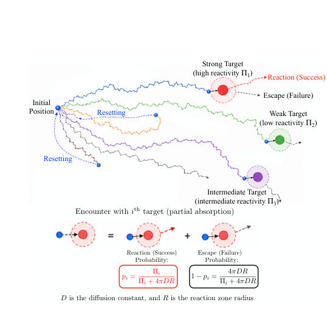
<figcaption class="paper-figure-caption"><b>Fig 1.</b> FIG. 1. Schematics of a resetting-induced first-passage pro- cess in the presence of multiple reactive targets. A substrate molecule searches for enzyme molecules acting as partially ab- sorbing targets with different reactivities Πi. Upon encounter with the target, the molecule can either react (absorption) or escape without absorption, reflecting the finite reactivity of the targets. Stochastic resetting randomly relocates the molecule, generating a competition between diffusion, reset- ting, and target reactivity that governs the search efficiency. The lower panel illustrates the reaction and escape probabil- ities associated with a partially absorbing target.</figcaption>
</figure>
<figure class="paper-figure-card">
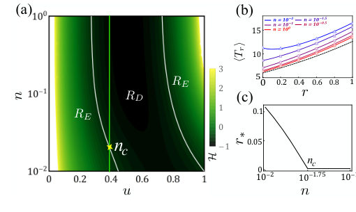
<figcaption class="paper-figure-caption"><b>Fig 2.</b> FIG. 2. (a) Heat map of Hpn, Π0, u, lq in pn ´ uq space. The white contours correspond to Hpn, Π0, u, lq “ 0, or equiv- alently CV0puq “ 1. These contours separate the param- eter space into the resetting-enhanced regime RE and the detrimental-resetting region RD. (b) Unconditional MFPT as a function of the resetting rate for different values of n, where the particle is initially at u “ 0.4 [also marked in (a)]. The black dashed line represents the unconditional MFPT in presence of the purely absorbing boundaries. (c) Optimal re- setting rate r˚ as a function of reactivity ratio n. The critical reactivity ratio nc as obtained from this plot is also marked in (a). Parameters: l “ 5, D “ 0.5...</figcaption>
</figure>
<figure class="paper-figure-card">
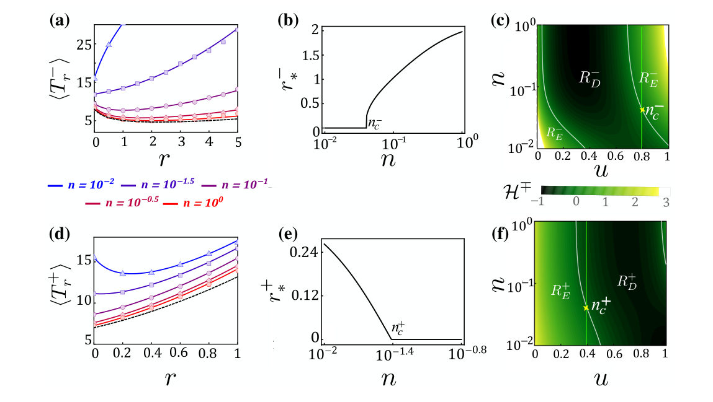
<figcaption class="paper-figure-caption"><b>Fig 3.</b> FIG. 3. Conditional first-passage processes for exit through boundaries at x “ 0 (upper panels) and x “ l (lower panels). (a, d) Conditional mean first passage times (MFPTs) as functions of the resetting rate for different values of reactivity ratio n “ Πl{Π0. (b, e) Optimal resetting rates as functions of the reactivity ratio. (c, f) Heat maps of H¯pn, Π0, u, lq. The white contours correspond to H¯pn, Π0, u, lq “ 0, or equivalently CV ¯ 0 puq “ Λ¯ 0 puq. These contours separate the parameter space into the resetting-enhanced regime R¯ E and the detrimental-resetting region R¯ D. In (c, f), the initial positions are chosen as u “ 0.8 and u “ 0.4, respectively. The corresponding conditional...</figcaption>
</figure>
<figure class="paper-figure-card">
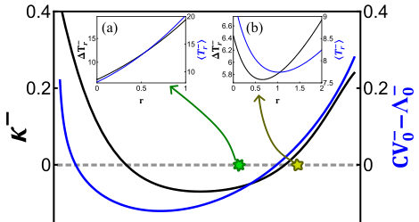
<figcaption class="paper-figure-caption"><b>Fig 4.</b> FIG. 5. Parameter regimes characterizing the effectiveness of stochastic resetting in optimizing the conditional MFPT and its fluctuations for exit through the left boundary. The solid black and blue curves show κ´ and CV ´ 0 ´Λ´ 0 , respectively, as functions of initial position u. We choose two representative initial position: u “ 0.6 (green marker), for which κ´ ă 0 and CV ´ 0 ă Λ´ 0 , and u “ 0.8 (yellow marker), for which κ´ ą 0 and CV ´ 0 ą Λ´ 0 .The conditional MFPTs and their associated fluctuations as functions of resetting rate are shown in panels (a) and (b) for u “ 0.6 and u “ 0.8, respectively.</figcaption>
</figure>
<figure class="paper-figure-card">
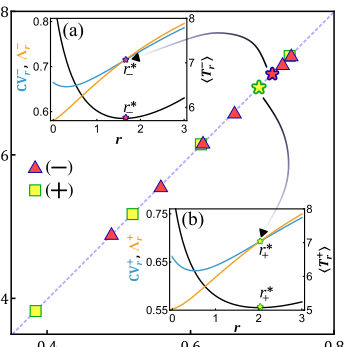
<figcaption class="paper-figure-caption"><b>Fig 5.</b> FIG. 4. Verification of the relation for the conditional FPTs at the optimal resetting rate. The main panel shows Λ¯ r˚ ¯puq</figcaption>
</figure>
</div>

<p><strong>Summary.</strong> This paper analyzes diffusive search processes in complex media by incorporating the realistic effect of finite target reactivity alongside stochastic resetting. It demonstrates that the optimal strategy for enhancing transport efficiency is not universal but depends critically on the specific kinetics of the reactive targets. The findings provide a crucial theoretical tool for understanding reaction-diffusion dynamics in systems where interactions are not instantaneous.</p>
<p><strong>Why it may be interesting.</strong> While focused on classical diffusion, the mathematical framework involving non-equilibrium dynamics, boundary conditions, and optimization criteria for transport efficiency is highly relevant to open quantum systems where dissipation and boundary interactions are key.</p>
<details>
<summary>Detailed structure</summary>
<p><strong>Main problem.</strong> The study investigates how stochastic resetting affects diffusive transport in complex environments containing targets with finite reactivity, moving beyond the idealization of perfectly absorbing boundaries.</p>
<p><strong>Main result.</strong> The target reactivity significantly modifies the optimization landscape, leading to distinct regimes where the optimal resetting rate becomes intrinsically dependent on the target's chemical kinetics.</p>
<p><strong>Method.</strong> The authors employ theoretical analysis using the Fokker-Planck equation and renewal equations to derive expressions for first-passage time properties under both diffusion and intermittent resetting.</p>
<p><strong>Model / system.</strong> The model is a one-dimensional diffusion process (Brownian motion) confined between two reactive targets. The process incorporates stochastic resetting, which periodically reinitializes the particle's position.</p>
<p><strong>Key observables.</strong> Mean First Passage Time (MFPT), conditional MFPT, survival probability, and the optimal resetting rate.</p>
<p><strong>Important parameters / regimes.</strong> Target reactivity ($\Pi$), the ratio of reactivities ($\Pi_l / \Pi_0$), and the resetting rate ($\lambda$).</p>
<p><strong>Assumptions / limitations.</strong> The primary assumption addressed is moving from perfectly absorbing targets (ideal) to partially absorbing targets (realistic, modeled via Robin boundary conditions).</p>
<p><strong>Figures summary.</strong> Figures illustrate the competition between diffusion, resetting, and target reactivity, showing parameter regimes where resetting enhances efficiency or where the MFPT dependence on the resetting rate is monotonic.</p>
<p><strong>Paper structure.</strong> The paper builds from the basic diffusion process with reactive boundaries (no resetting) to incorporating the renewal equation for the survival probability under resetting, culminating in the analysis of optimal control parameters.</p>
</details>
<details>
<summary>Abstract</summary>
<p>We study search processes in a complex environment using the strategy of stochastic resetting. A common occurrence in these environments is targets with finite reactivity. Stochastic resetting has emerged as a powerful mechanism for optimizing search processes by curtailing long, unproductive excursions inherent to diffusive dynamics. Most theoretical studies, however, assume perfectly absorbing targets -- an idealization that overlooks the finite reactivity commonly encountered in realistic chemical and biological systems. In this work, we investigate the interplay between stochastic resetting and finite-target reactivity in reaction - diffusion processes. Considering a one-dimensional system with multiple reactive targets, we demonstrated that the target reactivity modifies the optimization landscape. We uncover distinct regimes in which resetting enhances transport efficiency towards specific targets based on their chemical kinetics. As a consequence, the optimal resetting rate becomes intrinsically reactivity dependent. Our results identify target reactivity as a crucial control parameter governing stochastic transport and provide insights into reaction-diffusion processes in complex media.</p>
</details>
<p><sub><a href="#top">↑ back to top</a></sub></p>

<p><a id="paper-2609.02428"></a></p>
<h3 id="circuit-level-loss-performance-of-ffcc-and-rhg-codes-in-a-compound-photon-atom-quantum-architecture"><a href="http://arxiv.org/abs/2609.02428v1">Circuit-Level Loss Performance of FFCC and RHG Codes in a Compound Photon-Atom Quantum Architecture</a></h3>
<p><strong>Authors:</strong> Dana Ben Porath, Juval Bechar, Daniel Azses, Yaron Jarach<br>
<strong>Type:</strong> theory · <strong>Category:</strong> quantum information and computing · <strong>PDF:</strong> <a href="https://arxiv.org/pdf/2609.02428v1">https://arxiv.org/pdf/2609.02428v1</a><br>
<strong>Analysis basis:</strong> full PDF text, analyzed in chunks
<strong>Topic relevance:</strong> <code>correlated / nonlocal dissipation</code> <strong>2/5</strong> · <code>methods for driven-dissipative</code> <strong>2/5</strong> · <code>quantum measurements</code> <strong>2/5</strong> · <code>QC/QI experiment</code> <strong>1/5</strong> · <code>Tavis-Cummings &amp; cavity-many-emitter</code> <strong>1/5</strong> · <code>analog quantum simulation</code> <strong>1/5</strong> · <code>driven-dissipative phase transition</code> <strong>1/5</strong> · <code>quantum optics experiment</code> <strong>1/5</strong></p>
<div class="figure-strip-hint">↔ Scroll figures horizontally</div>
<div class="paper-figures-scroll">
<figure class="paper-figure-card">
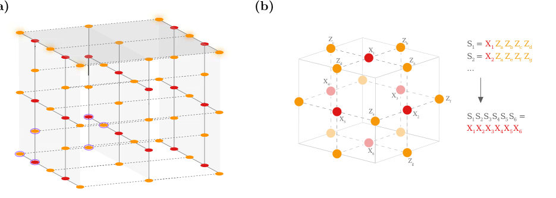
<figcaption class="paper-figure-caption"><b>Fig 1.</b> Figure 1: RHG code construction and check structure, adapted from Arwas et al. [15]. (a) An l = 3, t = 3 RHG cluster-state construction starting and ending with dual layers, corresponding to logical |0⟩L initialization and measurement. For clarity, the wraparound CZ links implementing periodic boundaries in the simulations are omitted. Orange and red circles denote data and syndrome-like (SL) qubits, respectively; dashed and solid gray lines denote time-like and space-like CZ gates. The shaded cap marks a logical correlation surface determined by the product of the highlighted X-basis measurement outcomes. The circled qubits indicate a possible six-ring unit cell, motivating the distinction...</figcaption>
</figure>
<figure class="paper-figure-card">
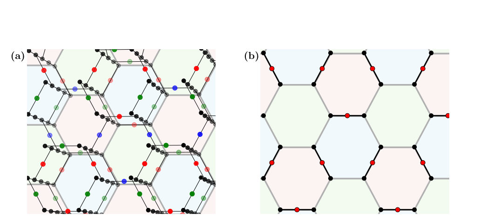
<figcaption class="paper-figure-caption"><b>Fig 2.</b> Figure 2: The FFCC code construction for l = 3 with periodic boundary conditions on a rectangular cut. Black circles denote data qubits, colored circles denote SL qubits, and edges denote CZ gates. Edges through the periodic boundaries are omitted for clarity. (a) Five layers ordered as red–green–blue–red–green. (b) A single red layer.</figcaption>
</figure>
<figure class="paper-figure-card">
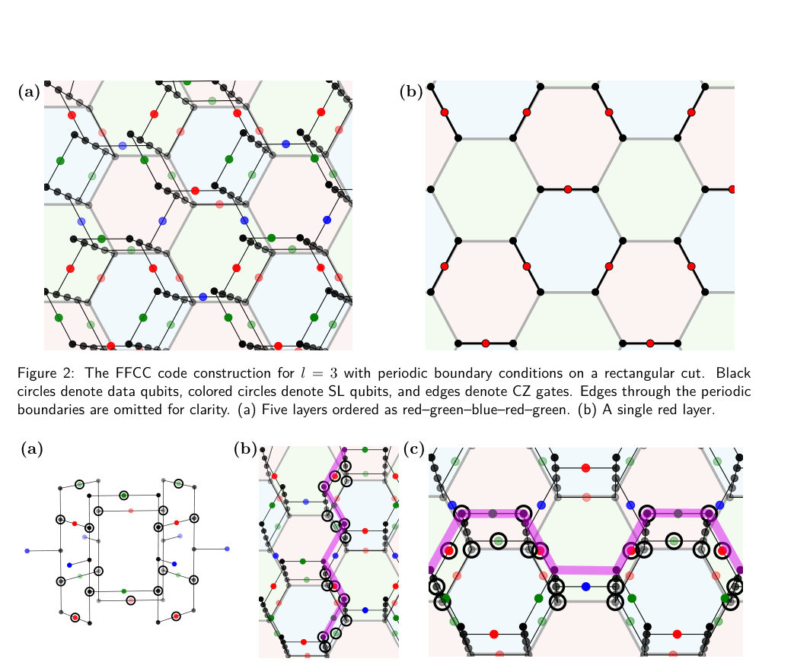
<figcaption class="paper-figure-caption"><b>Fig 3.</b> Figure 3: (a) An 18-qubit X-type check of the FFCC code. Its support spans five consecutive layers in the sequence SL–data–no support–data–SL, with the supported qubits circled. (b)–(c) Vertical and horizontal logical-X correlation surfaces, respectively. In each panel, the magenta line indicates the reference path used to construct the surface, and the circled qubits indicate its support. On odd-numbered layers (1, 3, . . .), the surface contains data qubits along the reference path that are connected to SL qubits on that path. On even-numbered layers (2, 4, . . .), it contains SL qubits along the reference path that are connected to two data qubits on that path. This construction requires...</figcaption>
</figure>
<figure class="paper-figure-card">
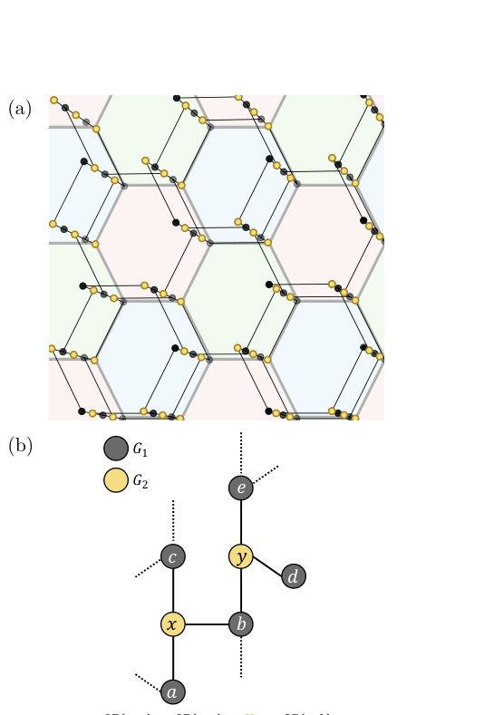
<figcaption class="paper-figure-caption"><b>Fig 4.</b> Figure 4: (a) Reduced FFCC code construction for l = 3 and t = 5, with periodic boundary conditions imposed on a rectangular cut. The graph is bipartitioned into the two sets G1 (gray) and G2 (yellow). There are no SL qubits. Edges denote CZ gates; periodic-boundary edges are omitted for clarity. (b) Local subgraph containing two G2 qubits, x and y, that are next-nearest neigh- bors, together with the adjacent G1 qubits a, b, c, d, and e. Each G2 qubit undergoes an H gate between its in- terlayer and intralayer CZ gates.</figcaption>
</figure>
<figure class="paper-figure-card">
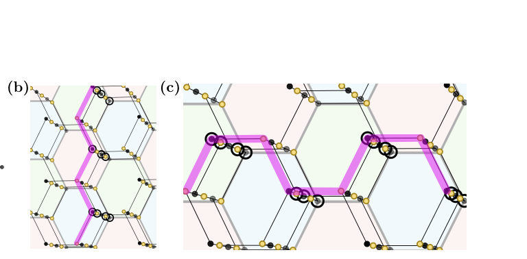
<figcaption class="paper-figure-caption"><b>Fig 5.</b> Figure 5: (a) A 12-qubit check of the reduced FFCC code. Its support spans five consecutive layers in the sequence G2–G1–no support–G1–G2, with the supported qubits circled. (b)–(c) Vertical and horizontal logical-X correlation surfaces, respectively. In each panel, the magenta line indicates the reference path used to construct the surface, and the circled qubits indicate its support. The surface contains qubits along paths parallel to the reference path: G1 qubits on odd-numbered layers (1, 3, . . .) and G2 qubits on even-numbered layers (2, 4, . . .). Only qubits connected to opposite-partition qubits along the same path are included. This construction requires an odd total number of...</figcaption>
</figure>
</div>

<p><strong>Summary.</strong> This work rigorously compares three quantum error-correcting codes (RHG, FFCC, rFFCC) for use in a photon-atom quantum computer designed for MBQC. By employing a circuit-level loss model that accounts for correlated photon loss, the authors determine that code performance is highly sensitive to the specific hardware connectivity and loss mechanism, rather than just the code's graph degree.</p>
<p><strong>Why it may be interesting.</strong> It provides a highly detailed, hardware-aware analysis of QEC performance, moving beyond idealized IID loss models to incorporate realistic correlated error propagation from photonic loss in a photon-atom setting.</p>
<details>
<summary>Detailed structure</summary>
<p><strong>Main problem.</strong> The paper compares the circuit-level loss performance of three quantum error-correcting codes (RHG, FFCC, and reduced FFCC) when implemented in a specific hardware architecture.</p>
<p><strong>Main result.</strong> RHG achieves the highest circuit-level threshold under uniform loss, but the optimal code depends on the specific loss mechanism and connectivity, showing that lower graph degree is not universally superior.</p>
<p><strong>Method.</strong> The authors use an architecture-aware circuit-level loss model to simulate error thresholds by analyzing how mid-circuit photon loss propagates correlated Pauli errors.</p>
<p><strong>Model / system.</strong> The study is set in a compound photon-atom quantum architecture, utilizing reusable atom-cavity units to generate measurement-based quantum computation (MBQC) resources via near-deterministic photon-atom CZ gates.</p>
<p><strong>Key observables.</strong> Circuit-level thresholds (e.g., 2.75% for RHG), Logical Error Rate (LER), and the comparison between bipartite and STAP generation schemes.</p>
<p><strong>Important parameters / regimes.</strong> The effective loss probability ($p$) associated with photon loss during CZ gates, STAP, and measurement.</p>
<p><strong>Assumptions / limitations.</strong> The model assumes photon loss is the dominant error mechanism, neglecting photonic Pauli errors, atomic loss, and intrinsic atomic errors.</p>
<p><strong>Figures summary.</strong> Figures illustrate the construction of the codes (RHG, FFCC, rFFCC) and show logical correlation surfaces, while supplementary figures compare LER thresholds for different generation schemes.</p>
<p><strong>Paper structure.</strong> The paper establishes the physical platform and loss model, compares the code structures (RHG vs. FFCC variants), and then evaluates performance by comparing circuit-level thresholds and LERs across different generation schemes (bipartite vs. STAP).</p>
</details>
<details>
<summary>Abstract</summary>
<p>We compare the Raussendorf-Harrington-Goyal (RHG) code, the Foliated Floquet Color Code (FFCC), and the reduced FFCC in a compound photon-atom architecture that directly generates measurement-based quantum computation (MBQC) resources with near-deterministic photon-atom CZ gates. RHG serves as a natural benchmark, while the FFCC variants allow us to study whether reduced graph degree improves performance under an architecture-aware circuit-level loss model with delayed heralding and correlated bond-loss propagation. We construct two generation schemes compatible with the compound hardware and evaluate circuit-level thresholds under periodic boundary conditions. RHG achieves the highest circuit-level threshold, 2.75%, and its threshold falls below that of reduced FFCC only for large excess loss on intermodule CZ connections. RHG also achieves the lowest logical error rate in most resource-matched comparisons, but some low-loss windows favor reduced FFCC. Overall, we show that when the hardware supports the native gates and connectivity required for MBQC, the benefits of lower graph degree must be weighed against each code's intrinsic IID loss tolerance, generation-scheme details, and hardware-aware resource overhead.</p>
</details>
<p><sub><a href="#top">↑ back to top</a></sub></p>

<p><a id="paper-2609.01831"></a></p>
<h3 id="kelvin-helmholtz-instability-in-annular-superfluids-across-the-ufg-bcs-crossover"><a href="http://arxiv.org/abs/2609.01831v1">Kelvin-Helmholtz instability in annular superfluids across the UFG-BCS crossover</a></h3>
<p><strong>Authors:</strong> Michał Śliwiński, Klejdja Xhani, Gabriel Wlazłowski<br>
<strong>Type:</strong> theory · <strong>Category:</strong> quantum gases · <strong>PDF:</strong> <a href="https://arxiv.org/pdf/2609.01831v1">https://arxiv.org/pdf/2609.01831v1</a><br>
<strong>Analysis basis:</strong> full PDF text, analyzed in chunks
<strong>Topic relevance:</strong> <code>Keldysh / 2PI / non-Gaussian methods</code> <strong>2/5</strong> · <code>analog quantum simulation</code> <strong>2/5</strong> · <code>methods for driven-dissipative</code> <strong>2/5</strong> · <code>non-equilibrium universality</code> <strong>1/5</strong></p>
<div class="figure-strip-hint">↔ Scroll figures horizontally</div>
<div class="paper-figures-scroll">
<figure class="paper-figure-card">
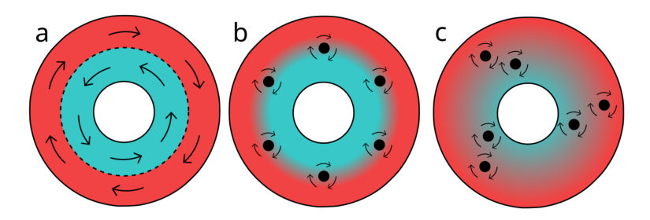
<figcaption class="paper-figure-caption"><b>Fig 1.</b> Figure 1: Sketch of distinct stages of superfluid Kelvin–Helmholtz instability in circular geometry. a) Two superfluids, separated by a barrier (dotted line), counter-rotate. b) Once the barrier is removed, a shear layer forms at the interface, giving rise to a necklace of same-sign quantized vortices (black dots). c) The vortex necklace loses its ordered structure, marking the onset of the instability.</figcaption>
</figure>
<figure class="paper-figure-card">
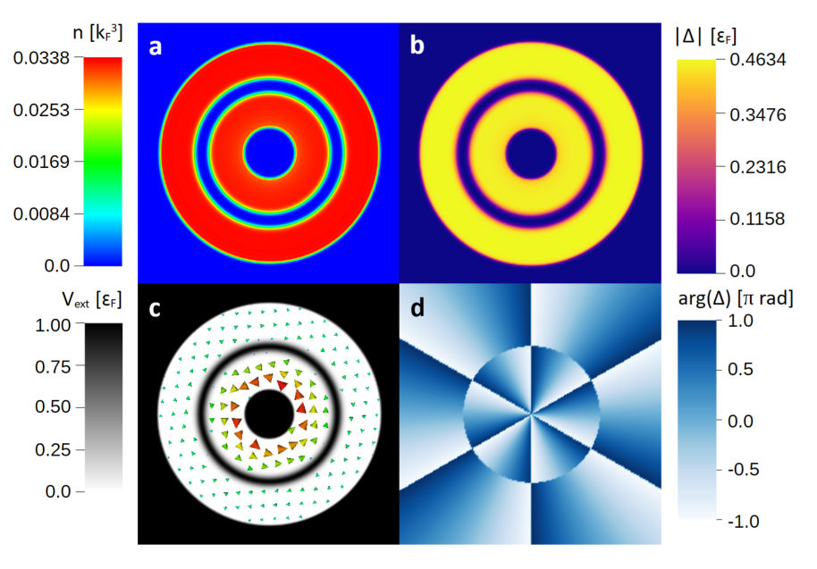
<figcaption class="paper-figure-caption"><b>Fig 2.</b> Figure 2: Initial state representing a unitary Fermi gas (T ≈0.3 Tc) confined in a ring geometry. The Gaussian barrier separating the two superfluids has a width skF = 2.36. The imprinted current in each superfluid corresponds to a winding number w = ±6, giving a relative winding number ∆w = 12. The panels show the total density n (a), the absolute value of the order parameter |∆| (b), the external repulsive potential Vext with the current density j displayed with arrows (c), and the phase of the order parameter arg[∆] (d). VisIt software was used to generate these plots [38].</figcaption>
</figure>
<figure class="paper-figure-card">
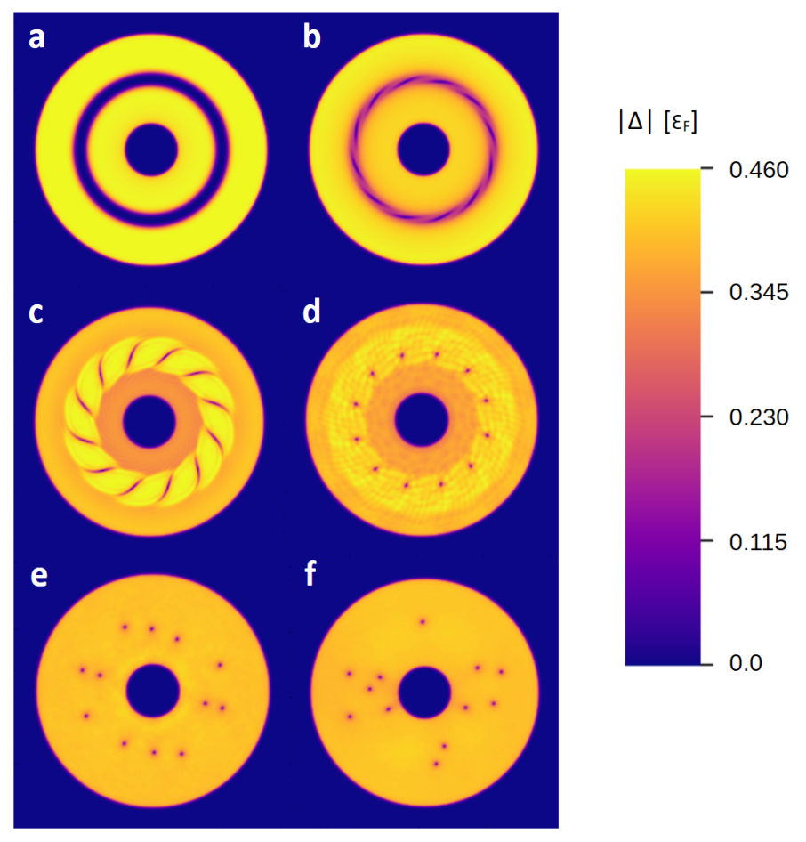
<figcaption class="paper-figure-caption"><b>Fig 3.</b> Figure 3: Formation of a vortex necklace in a unitary Fermi gas and the subsequent Kelvin-Helmholtz instability. The consecutive panels show snapshots of the system at increasing times, during and after the barrier removal, namely: a) tεF = 0, b) tεF = 56, c) tεF = 84, d) tεF = 189, e) tεF = 500, f) tεF = 1589. The color maps display the distribution of |∆(x, y)|/εF. The setup is the same as in Fig. 2. The barrier is removed in time interval ∆trεF = 60. In the pairing field profile, one can also observe a sound wave propagating towards the boundaries, visible well in panels c and d.</figcaption>
</figure>
<figure class="paper-figure-card">
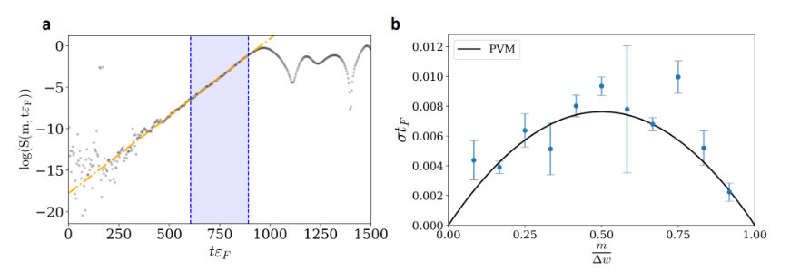
<figcaption class="paper-figure-caption"><b>Fig 4.</b> Figure 4: a) Temporal evolution of the structure factor for mode m=6, shown on a logarithmic scale. The shaded area indicates the time interval used to estimate the growth rate. The orange dashed line shows the fit to the signal. b) Extracted growth rates and the PVM prediction from Eq. (12) as a function of the mode number. All simulation parameters are the same as in Fig. 3 and for ∆w = 12.</figcaption>
</figure>
<figure class="paper-figure-card">
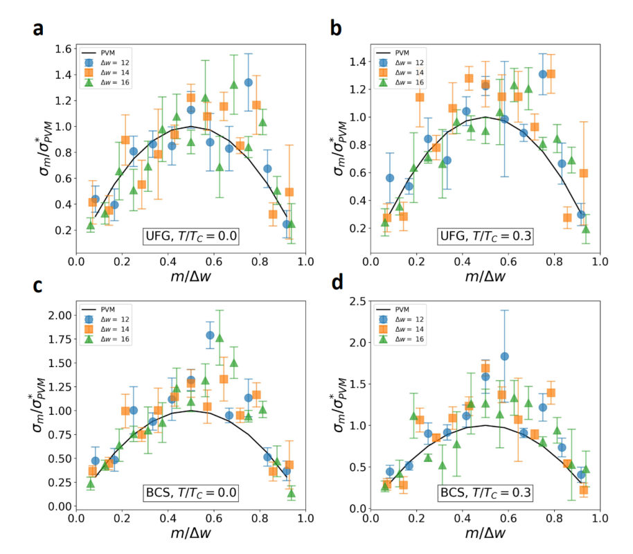
<figcaption class="paper-figure-caption"><b>Fig 5.</b> Figure 5: Growth rates of KHI modes, normalized to the maximal growth rate predicted by the point-vortex model (PVM), as a function of mode number m (scaled to ∆w), from the UFG regime (a–b) to the BCS regime (c–d), at T = 0 (a, c) and T = 0.3 Tc (b, d). Different colors indicate different values of ∆w = 12, 14, 16. Black lines show the PVM predictions, which are expected to peak at m = ∆w/2. Error bars represent the standard deviation of growth rates extracted from fits over randomly chosen time windows within the instability interval.</figcaption>
</figure>
</div>

<p><strong>Summary.</strong> The authors study the Kelvin-Helmholtz instability in annular Fermi superfluids across the UFG-BCS crossover using time-dependent superfluid density functional theory. They find that while the instability growth rates match predictions in the unitary regime, the dynamics fundamentally change in the BCS regime due to competing anti-vortex proliferation. This offers crucial insights into the non-ideal, fermionic nature of superfluid dynamics.</p>
<p><strong>Why it may be interesting.</strong> This work provides a microscopic, fermionic benchmark for understanding hydrodynamic instabilities in quantum superfluids, directly addressing discrepancies between theory and experiment in a highly tunable quantum system.</p>
<details>
<summary>Detailed structure</summary>
<p><strong>Main problem.</strong> Investigating the Kelvin-Helmholtz instability (KHI) in annular superfluids across the Unitary Fermi Gas (UFG) to Bardeen-Cooper-Schrieffer (BCS) crossover.</p>
<p><strong>Main result.</strong> The KHI growth rates are qualitatively consistent with point-vortex models in UFG/moderate BCS regimes but systematically higher. In the deep BCS regime, the dynamics change due to faster proliferation of boundary-generated antivortices, which destroys the initial vortex necklace.</p>
<p><strong>Method.</strong> Time-dependent superfluid density functional theory (TDSLDA) is used to simulate the real-time evolution of the superfluid system.</p>
<p><strong>Model / system.</strong> The system consists of counter-rotating annular Fermi superfluids, modeled using a time-dependent extension of the Bogoliubov-de Gennes equations. The analysis spans the crossover from strongly interacting UFG to weakly attractive BCS regimes.</p>
<p><strong>Key observables.</strong> KHI growth rate ($\sigma$), characteristic timescale ($ au_{KHI}$), structure factor $S(m, t)$, and the density/order parameter evolution.</p>
<p><strong>Important parameters / regimes.</strong> Relative flow velocity ($\Delta v$), interaction strength (parametrized by $\xi_{aF}^{-1}$), and temperature (up to $0.3 T_c$).</p>
<p><strong>Assumptions / limitations.</strong> The use of TDSLDA functional theory, which handles contact interactions via regularization; the initial state is assumed to be an idealized vortex necklace.</p>
<p><strong>Figures summary.</strong> Figures illustrate the stages of KHI, show the exponential growth of the structure factor $S(m, t)$ over time, and depict the qualitative change in dynamics in the deep BCS regime due to anti-vortex proliferation.</p>
<p><strong>Paper structure.</strong> The paper establishes the theoretical framework using TDSLDA, simulates the initial vortex necklace formation, analyzes the KHI growth rates across different interaction regimes (UFG $   o$ BCS), and finally details the qualitative change in dynamics observed in the deep BCS regime.</p>
</details>
<details>
<summary>Abstract</summary>
<p>We investigate the Kelvin-Helmholtz instability of counter-rotating annular Fermi superfluids using time-dependent superfluid density functional theory. When the two initially separated superflows merge, a necklace of quantized vortices forms at their interface and subsequently becomes unstable. We extract mode-resolved instability growth rates and study their dependence on relative flow velocity, interaction strength, and temperature across the strongly interacting unitary regime and the weakly attractive BCS regime. In the unitary gas and moderate BCS regimes, the growth rates remain qualitatively consistent with the point-vortex model, though systematically at or above its predictions, with no significant dependence on interaction strength or temperature up to approximately $0.3 T_c$. Deeper in the BCS regime, the dynamics change qualitatively: boundary-generated antivortices proliferate faster than the Kelvin-Helmholtz instability itself, destroying the initial vortex necklace before the instability can fully develop. These results provide a microscopic benchmark for Kelvin-Helmholtz dynamics in fermionic superfluids and help constrain possible explanations of the existing experiment-theory discrepancy.</p>
</details>
<p><sub><a href="#top">↑ back to top</a></sub></p>

<p><a id="paper-2609.02466"></a></p>
<h3 id="prominent-dimensional-effects-on-high-order-harmonic-generation-in-strongly-correlated-electron-systems"><a href="http://arxiv.org/abs/2609.02466v1">Prominent Dimensional Effects on High-order Harmonic Generation in Strongly Correlated Electron Systems</a></h3>
<p><strong>Authors:</strong> Kento Uchida, Shintaro Takayoshi, Yuta Murakami, Dongjoon Song, Alannah M. Hallas, Masayuki Watanabe, Takashi Konishi, Aiko Nakano, Koichiro Tanaka<br>
<strong>Type:</strong> both · <strong>Category:</strong> strongly correlated electrons · <strong>PDF:</strong> <a href="https://arxiv.org/pdf/2609.02466v1">https://arxiv.org/pdf/2609.02466v1</a><br>
<strong>Analysis basis:</strong> full PDF text, analyzed in chunks
<strong>Topic relevance:</strong> <code>Keldysh / 2PI / non-Gaussian methods</code> <strong>2/5</strong> · <code>analog quantum simulation</code> <strong>2/5</strong> · <code>methods for driven-dissipative</code> <strong>2/5</strong> · <code>interference shaping light</code> <strong>1/5</strong></p>
<div class="figure-strip-hint">↔ Scroll figures horizontally</div>
<div class="paper-figures-scroll">
<figure class="paper-figure-card">
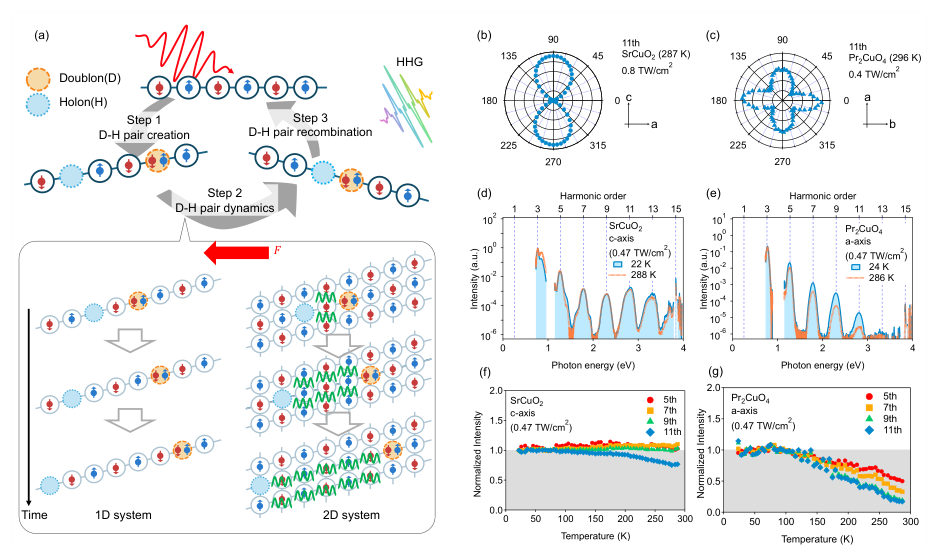
<figcaption class="paper-figure-caption"><b>Fig 1.</b> FIG. 1. Left: (a) Schematic illustration of strong-field charge dynamics in a single-band Mott insulator. The dynamics can be decomposed into three steps: creation, acceleration, and recombination of D-H pairs. The lower panels show the dynamics of D-H pairs driven by an electric field in 1D (left) and 2D (right) systems. In 2D and higher-dimensional systems, the motion of DH pairs can disturb the spin background and generate spin excitations, indicated by green wavy curves. This illustrates the strong influence of spin–charge coupling on the charge dynamics. Right: Experimental results of HHG in SrCuO2 and Pr2CuO4. Crystal orientation dependence of 11th harmonic generation in (b) SrCuO2...</figcaption>
</figure>
<figure class="paper-figure-card">
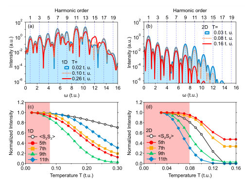
<figcaption class="paper-figure-caption"><b>Fig 2.</b> FIG. 2. Comparison of 1D and 2D simulations of HH spectra under CW excitation. (a), (b) HH spectra IHHG(ω) for (a) the 1D and (b) the 2D systems. (c), (d) Temperature depen- dence of the nth-harmonic peak intensity In and the nearest- neighbor spin–spin correlation ⟨SzSz⟩. The shaded region de- notes temperatures up to the room temperature. The HH spectra are evaluated with the box window described in the SM.</figcaption>
</figure>
<figure class="paper-figure-card">
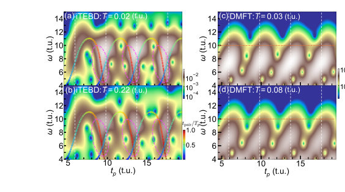
<figcaption class="paper-figure-caption"><b>Fig 3.</b> FIG. 3. Comparison between the subcycle spectra of the 1D and 2D simulations under CW excitation.The spectra are shown over two driving cycles, while the characteristic emis- sion pattern repeats every half cycle. (a,b) Results for the 1D system at (a) T = 0.02 and (b) T = 0.22. The colored dots indicate the emission energy at time tp predicted by the doublon–holon three-step model. (c,d) Results for the 2D sys- tem at (c) T = 0.03, (d) T = 0.08. For the subcycle analysis, we use a Gaussian window with width σp = 0.7. In panels (b) and (d), the temperatures are chosen to give compara- ble reductions in the spin–spin correlation ⟨SzSz⟩from the lowest-temperature values in the 1D and 2D...</figcaption>
</figure>
<figure class="paper-figure-card">
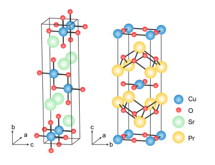
<figcaption class="paper-figure-caption"><b>Fig 4.</b> FIG. 4. Crystal structures of SrCuO2(left panel) and Pr2CuO4 (right panel).</figcaption>
</figure>
<figure class="paper-figure-card">
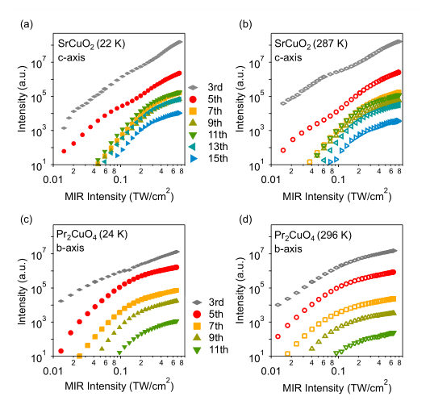
<figcaption class="paper-figure-caption"><b>Fig 5.</b> FIG. 5. Driving intensity dependence of high harmonic yields in (a) SrCuO2 at 22 K, (b) at 287 K, (c) Pr2CuO4 at 24 K, and (d) at 296 K.</figcaption>
</figure>
</div>

<p><strong>Summary.</strong> This paper explores how dimensionality controls the extreme nonlinear optical response, specifically High-Harmonic Generation, in strongly correlated cuprate insulators. By combining experiments on 1D and 2D materials with advanced Hubbard model simulations, the authors demonstrate that dimensionality dictates the coherence dynamics of charge carriers. The findings establish dimensionality and spin-charge coupling as critical control parameters for manipulating light-matter interactions in these complex quantum materials.</p>
<p><strong>Why it may be interesting.</strong> The work provides a direct link between fundamental many-body physics (spin-charge coupling) and measurable, extreme nonlinear optical phenomena (HHG), which is highly relevant for understanding correlated quantum materials.</p>
<details>
<summary>Detailed structure</summary>
<p><strong>Main problem.</strong> The study investigates how the dimensionality of a strongly correlated electron system affects its extreme nonlinear optical response, specifically High-Harmonic Generation (HHG).</p>
<p><strong>Main result.</strong> A pronounced dimensional contrast was found: quasi-1D $    ext{SrCuO}_2$ exhibits a robust, plateau-like HH spectrum, while quasi-2D $ ext{Pr}_2   ext{CuO}_4$ shows strong thermal suppression, linking this to dimensionality-dependent doublon–holon dephasing.</p>
<p><strong>Method.</strong> The research combines experimental HHG measurements on cuprates with theoretical nonequilibrium simulations using the Hubbard model (iTEBD and DMFT).</p>
<p><strong>Model / system.</strong> The physical systems are quasi-1D ($    ext{SrCuO}_2$) and quasi-2D ($ ext{Pr}_2   ext{CuO}_4$) charge-transfer insulators, modeled by an effective single-band Hubbard Hamiltonian. The dynamics are simulated using advanced quantum many-body techniques.</p>
<p><strong>Key observables.</strong> High-harmonic generation (HHG) spectrum, temperature dependence of harmonic yield, and subcycle spectra revealing doublon–holon coherence.</p>
<p><strong>Important parameters / regimes.</strong> Dimensionality (1D vs 2D), temperature (thermal suppression), and spin-charge coupling strength.</p>
<p><strong>Assumptions / limitations.</strong> The theoretical analysis relies on mapping the system to an effective single-band Hubbard model and using approximations like NCA in DMFT.</p>
<p><strong>Figures summary.</strong> Figures compare HH spectra and temperature dependence for 1D vs 2D systems, showing the characteristic plateau vs. monotonic decay. Subcycle spectra illustrate the time evolution of coherence, which is suppressed in 2D.</p>
<p><strong>Paper structure.</strong> The paper establishes the problem by contrasting 1D and 2D cuprates, presents experimental observations (HHG spectra and temperature dependence), and then uses nonequilibrium simulations (iTEBD/DMFT) to microscopically explain the observed dimensional contrast via spin-charge coupling effects.</p>
</details>
<details>
<summary>Abstract</summary>
<p>Dimensionality strongly affects elementary excitations in correlated quantum materials, yet its impact on extreme nonlinear optical responses remains largely unexplored. Here, we combine high-harmonic generation (HHG) experiments on quasi-one-dimensional SrCuO$_2$ and quasi-two-dimensional Pr$_2$CuO$_4$ with nonequilibrium simulations of Hubbard models. We find a pronounced dimensional contrast: SrCuO$_2$ exhibits a robust plateau-like high-harmonic spectrum with weak temperature dependence, whereas Pr$_2$CuO$_4$ shows a monotonic decrease in harmonic yield and strong thermal suppression, especially at higher harmonics. The simulations qualitatively reproduce these trends and identify dimensionality-dependent doublon--holon dephasing, governed by spin--charge coupling, as their microscopic origin. These results establish dimensionality and spin--charge coupling as key control parameters for extreme nonlinear optical responses in correlated insulators.</p>
</details>
<p><sub><a href="#top">↑ back to top</a></sub></p>

<p><a id="paper-2609.02148"></a></p>
<h3 id="charge-transfer-electronic-structure-of-nixmath368math-x-s-se"><a href="http://arxiv.org/abs/2609.02148v1">Charge-Transfer Electronic Structure of NiX$_2$ (X = S, Se)</a></h3>
<p><strong>Authors:</strong> Atsushi Hariki, Takaki Okauchi, Daisuke Takegami, Naoki Ito, Mizuki Furo, Ayako Yamamoto, Tomoya Higo, Satoru Nakatsuji, Masato Yoshimura, Takashi Mizokawa, Jan Kunes<br>
<strong>Type:</strong> both · <strong>Category:</strong> strongly correlated electrons · <strong>PDF:</strong> <a href="https://arxiv.org/pdf/2609.02148v1">https://arxiv.org/pdf/2609.02148v1</a><br>
<strong>Analysis basis:</strong> full PDF text, analyzed in chunks
<strong>Topic relevance:</strong> <code>Keldysh / 2PI / non-Gaussian methods</code> <strong>2/5</strong> · <code>analog quantum simulation</code> <strong>2/5</strong> · <code>methods for driven-dissipative</code> <strong>1/5</strong> · <code>quantum measurements</code> <strong>1/5</strong></p>
<div class="figure-strip-hint">↔ Scroll figures horizontally</div>
<div class="paper-figures-scroll">
<figure class="paper-figure-card">
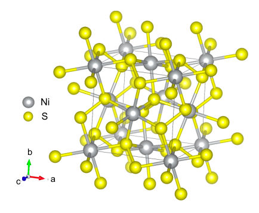
<figcaption class="paper-figure-caption"><b>Fig 1.</b> FIG. 1. Crystal structure of NiS2. The crystal structure is visualized using VESTA3 [13].</figcaption>
</figure>
<figure class="paper-figure-card">
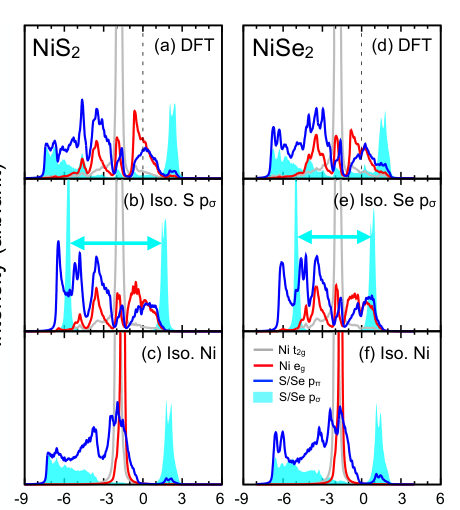
<figcaption class="paper-figure-caption"><b>Fig 2.</b> FIG. 2. The DFT spectral densities for NiS2 (left) and NiSe2 (right). The middle panels (b,e) show the results obtained after decoupling the S/Se pσ orbitals from the Ni 3d and S/Se pπ states. The bottom panels (c,f) show the results obtained after decoupling the Ni 3d orbitals from the S/Se p states (consistent with Ref. 4).</figcaption>
</figure>
<figure class="paper-figure-card">
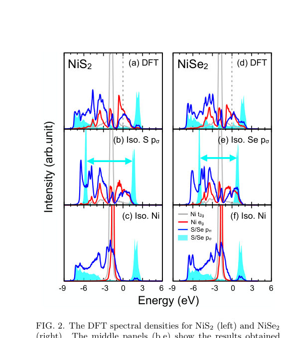
<figcaption class="paper-figure-caption"><b>Fig 3.</b> Figure 2(a) shows the DFT valence-band spectra of NiS2. The S 3p states are decomposed into pπ and pσ orbitals perpendicular and parallel to the dimer, respec- tively. Thanks to the nearly right angle (104◦) between the S–S dimer and the Ni–S bond, the Ni eg orbitals hy- bridize primarily with the S pπ orbitals (a σ-bond), while the Ni t2g orbitals hybridize more strongly with the S pσ orbitals (a π-bond). Figure 2(b) presents the spectra of the model with S pσ decoupled [40] from the rest of the system, exposing the bonding-antibonding splitting on the dimer. The splitting is sufficiently large to place the antibonding state above EF . In Fig. 2(c), where the Ni 3d orbitals are isolated,...</figcaption>
</figure>
<figure class="paper-figure-card">
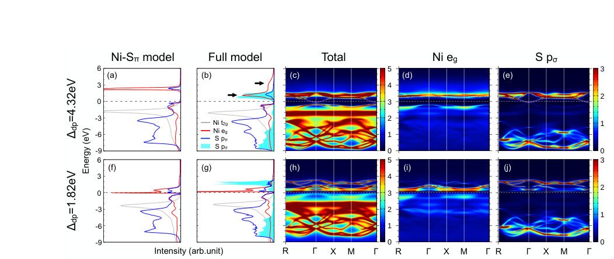
<figcaption class="paper-figure-caption"><b>Fig 4.</b> FIG. 3. DFT+DMFT results for NiS2 obtained with ∆dp = 4.32 eV and 1.82 eV, the latter is the optimal value. Shown are the spectral intensities for (a,f) Ni-S pπ model, (b,g) full model, and (c,h) corresponding momentum-resolved spectra. The orbital-projected spectral intensities of (d,i) Ni eg and (e,j) S pσ orbitals are also shown.</figcaption>
</figure>
<figure class="paper-figure-card">

<figcaption class="paper-figure-caption"><b>Fig 5.</b> FIG. 5. (a) Ni local spin-correlation function χspin(τ/β) in NiS2, calculated using DFT+DMFT for selected values of ∆dp (1.32 eV: blue, 1.82 eV: red, and 4.32 eV: black). The corre- sponding screened moment mscr = p</figcaption>
</figure>
</div>

<p><strong>Summary.</strong> This paper uses advanced DFT+DMFT calculations to map the electronic structure of nickel dichalcogenides (NiX2). By fitting to experimental photoemission and XAS data, the authors revise the understanding of the charge-transfer energy, concluding that substantial charge transfer occurs from the chalcogen ligands to the Ni centers. This work provides a detailed picture of how orbital interactions govern the electronic properties across the NiS2-xSe_x solid solution.</p>
<p><strong>Why it may be interesting.</strong> While focused on solid-state materials, the use of DMFT to model strong local correlations and the detailed analysis of orbital hybridization and charge transfer mechanisms are highly relevant to understanding open quantum systems and correlated dynamics.</p>
<details>
<summary>Detailed structure</summary>
<p><strong>Main problem.</strong> The study investigates the electronic structure and charge-transfer mechanism in nickel dichalcogenides (NiX2) to understand their insulating behavior and Metal-Insulator Transitions.</p>
<p><strong>Main result.</strong> The calculations reveal a smaller charge-transfer energy than previously thought, leading to significant ligand-to-Ni charge transfer and a reduction in the Ni local magnetic moment.</p>
<p><strong>Method.</strong> The research employs Density Functional Theory combined with Dynamical Mean-Field Theory (DFT+DMFT) to model electron correlations.</p>
<p><strong>Model / system.</strong> The physical system is NiS2 and NiSe2 in the pyrite structure, with the solid solution NiS2-xSe_x being analyzed. A tight-binding model spanning Ni 3d, S/Se p\pi, and p\sigma states is used within the DFT+DMFT framework.</p>
<p><strong>Key observables.</strong> Valence-band photoemission spectra (PES), Ni 2p core-level PES, Ni L-edge XAS, and the Ni local magnetic moment.</p>
<p><strong>Important parameters / regimes.</strong> The double-counting correction ($\mu_{dc}$) is a key parameter determined by fitting to experimental PES data; the charge-transfer energy ($\Delta_{dp}$) is also crucial.</p>
<p><strong>Assumptions / limitations.</strong> The model relies on fitting the double-counting correction to reproduce experimental spectra, and simplified models are used to isolate orbital contributions.</p>
<p><strong>Figures summary.</strong> Figures show DFT spectral densities for NiS2 and NiSe2, and simulated K-edge absorption spectra comparing results for different assumed charge-transfer energies.</p>
<p><strong>Paper structure.</strong> The paper establishes the theoretical framework using DFT+DMFT, calibrates the model against multiple experimental spectra (PES/XAS), derives key electronic parameters (like the CT energy), and then analyzes the orbital hybridization and spectral evolution across the NiS2-xSe_x series.</p>
</details>
<details>
<summary>Abstract</summary>
<p>We investigate the electronic structures of NiS$_2$ and NiSe$_2$ using density functional theory combined with dynamical mean-field theory (DFT+DMFT). A realistic electronic structure within DFT+DMFT was determined by optimizing the double-counting correction to reproduce experimental valence-band photoemission spectra. The validity of the present model is further confirmed by its successful description of the Ni 2$p$ core-level photoemission and Ni $L$-edge x-ray absorption spectra of NiS$_2$. Our results reveal a smaller charge-transfer energy than previously assumed, resulting in substantial ligand-to-Ni charge transfer and a reduced Ni local moment. We clarify how the relative position and interaction between the Ni upper Hubbard band and the antibonding chalcogen-dimer states shape the evolution of the low-energy electronic structure across the NiS$_{2-x}$Se$_x$ series.</p>
</details>
<p><sub><a href="#top">↑ back to top</a></sub></p>

<p><a id="paper-2609.02792"></a></p>
<h3 id="phonon-limited-detection-thresholds-for-genetically-encoded-fluorescent-protein-spin-qubit-relaxometry-of-neural-radicals"><a href="http://arxiv.org/abs/2609.02792v1">Phonon-limited detection thresholds for genetically encoded fluorescent-protein spin-qubit relaxometry of neural radicals</a></h3>
<p><strong>Authors:</strong> Parul Raghuvanshi, Sagnik Ganguly, Sharika E, Mohana Priya T., Vishvendra S. Poonia<br>
<strong>Type:</strong> theory · <strong>Category:</strong> other · <strong>PDF:</strong> <a href="https://arxiv.org/pdf/2609.02792v1">https://arxiv.org/pdf/2609.02792v1</a><br>
<strong>Analysis basis:</strong> full PDF text, analyzed in chunks
<strong>Topic relevance:</strong> <code>quantum measurements</code> <strong>2/5</strong> · <code>Keldysh / 2PI / non-Gaussian methods</code> <strong>1/5</strong> · <code>correlated / nonlocal dissipation</code> <strong>1/5</strong> · <code>driven-dissipative phase transition</code> <strong>1/5</strong> · <code>methods for driven-dissipative</code> <strong>1/5</strong></p>
<div class="figure-strip-hint">↔ Scroll figures horizontally</div>
<div class="paper-figures-scroll">
<figure class="paper-figure-card">

<figcaption class="paper-figure-caption"><b>Fig 1.</b> FIG. 1. Proposed FPSQ relaxometry concept. (a) A genetically anchored fluorescent protein spin qubit (FPSQ) is placed close to a radical-producing enzyme and read out optically at 912 nm. (b) The EYFP triplet acts as a spin-1 qubit with three zero-field ODMR transitions at 2E, D −E, and D + E. (c) A fluctuating radical bath adds a longitudinal relaxation channel, ∆Γ1 = κn, which shortens the triplet polarization decay measured after a dark time τ. This change is used to estimate the local radical density.</figcaption>
</figure>
<figure class="paper-figure-card">

<figcaption class="paper-figure-caption"><b>Fig 2.</b> FIG. 2. Transition-resolved spin-1 relaxation. (a) Population transfer rates for the three zero-field transitions, each driven by an orthogonal component of the dipolar field noise sampled at its own frequency ωij. In the white-noise regime (shaded, τc ≲57 ps), the three rates are degenerate. Beyond this regime, they split, making the decay multi-exponential and the readout transition a design variable. (b) Effective |Tz⟩polarization decay rate versus correlation time τc compared with a single two-level approximation. In the white-noise regime, the spin-1 relaxation rate is 3/2 times the two-level estimate, relevant to NO• and superoxide, confirming the use of single-exponential...</figcaption>
</figure>
<figure class="paper-figure-card">

<figcaption class="paper-figure-caption"><b>Fig 3.</b> FIG. 3. Relaxometry physics. (a) Lorentzian noise spectral density J(ω) for different correlation times, representative of NO• (ps),superoxide (tens of ps), and nitroxide labels (ns). The zero-field ODMR window and the range accessible by field tuning are indicated. (b) Single-radical relaxation rate as a function of sensor-radical distance, scaling as r−6.The shaded regions indicate the distance ranges for the anchored FPSQ and nanodiamond. (c) Correlation time as a function of distance. The diffusion time τdiff = r2/6D increases with distance and competes with the intrinsic spin-relaxation time of each radical, shown as shaded bands, with the shorter timescale determining the effective...</figcaption>
</figure>
<figure class="paper-figure-card">

<figcaption class="paper-figure-caption"><b>Fig 4.</b> FIG. 4. Phonon-limited intrinsic T1 and the engineering target. (a) The temperature dependence of the intrinsic T1. The total relaxation rate has contributions from two processes: the direct process (blue line) and the Raman process (orange line), while the black line shows the total relaxation rate. The measured T1 at 80 K (141 µs) differs from the value obtained from the fitted coefficients (226 µs) by a factor of ≈1.6. Extrapolating to room temperature gives a T1 range of ≈30-110 ns (shaded). At 295 K, the Raman contribution is about 720 times larger than the direct contribution and thus dominates the relaxation. (b) Room-temperature T1 achievable by making the chromophore environment...</figcaption>
</figure>
<figure class="paper-figure-card">

<figcaption class="paper-figure-caption"><b>Fig 5.</b> FIG. 5. Detection-limit map. (a) Minimum detectable NO• concentration (log color scale) versus intrinsic triplet T1 and detected-photon budget Ntot, for an anchored sensor (a = 2 nm, τc = 10 ps, C = 0.20, corresponding to the lowest ODMR transition).The white solid and yellow dashed lines indicate the micromolar (burst) and nanomolar (resting) sensitivity levels, respectively. The markers show the native room-temperature, 80 K, and engineered operating points. (b) Minimum detectable NO• concentration as a function of T1 for fixed photon budgets.The shaded regions indicate the physiologically relevant NO• concentration ranges. The limit is controlled primarily by the intrinsic T1, where...</figcaption>
</figure>
</div>

<p><strong>Summary.</strong> This paper develops a theoretical framework to determine the sensitivity limit of using a fluorescent protein as a spin-1 qubit to detect neural radicals. The analysis shows that the sensor's performance is fundamentally limited by its own intrinsic, phonon-mediated relaxation rate. By modeling the relaxation dynamics and proposing environmental stiffening, the authors provide concrete pathways to improve the qubit's coherence time for practical biological sensing.</p>
<p><strong>Why it may be interesting.</strong> This work directly applies advanced open quantum system theory (Redfield/Lindblad) to a solid-state, bio-molecular quantum sensor, providing quantitative design rules for enhancing coherence times in a complex, noisy environment.</p>
<details>
<summary>Detailed structure</summary>
<p><strong>Main problem.</strong> To develop a detection-limit theory for using a fluorescent-protein spin-qubit (FPSQ) to sense paramagnetic neural signaling radicals via spin relaxometry.</p>
<p><strong>Main result.</strong> The native room-temperature sensor is limited by its intrinsic, phonon-limited T1, falling short of physiological sensitivity by 6 to 8 orders of magnitude. Improving the chromophore environment stiffness by 2x is predicted to recover T1 sufficient for micromolar sensing.</p>
<p><strong>Method.</strong> The authors derived a transition-resolved Redfield relaxation matrix for the spin-1 qubit coupled to a diffusing radical bath, analyzing the resulting relaxation dynamics.</p>
<p><strong>Model / system.</strong> The system is an enhanced yellow fluorescent protein (EYFP) acting as an optically addressable spin-1 qubit in its metastable triplet state. Sensing occurs via spin relaxometry, where the radical's fluctuating field shortens the qubit's longitudinal relaxation time (T1).</p>
<p><strong>Key observables.</strong> Longitudinal relaxation time (T1), relaxivity ($\kappa$), and the effective relaxation rate ($\Gamma_{	ext{eff}}$).</p>
<p><strong>Important parameters / regimes.</strong> Phonon-limited intrinsic T1, correlation time ($    au_c$), and the ratio of Raman to direct relaxation processes ($\sim 720:1$).</p>
<p><strong>Assumptions / limitations.</strong> The analysis assumes the noise spectrum is Lorentzian and that the system can be treated in the single-exponential decay limit for fast radicals.</p>
<p><strong>Figures summary.</strong> Not specified, but the notes mention comparisons to Lindblad simulations and Nitrogen-Vacancy (NV) benchmarks.</p>
<p><strong>Paper structure.</strong> The paper establishes the physical platform (FPSQ), develops the theoretical framework (Redfield theory for spin relaxation), analyzes the limiting factors (phonon-limited T1), and proposes design rules for improvement.</p>
</details>
<details>
<summary>Abstract</summary>
<p>The demonstration that enhanced yellow fluorescent protein hosts an optically addressable spin-1 qubit in its metastable triplet state raises the prospect of genetically encoded quantum sensing at molecular length scales. We develop a detection-limit theory for using this fluorescent-protein spin qubit (FPSQ) to sense paramagnetic neural signaling radicals by spin relaxometry. We derive the transition-resolved Redfield relaxation matrix of the zero-field-split triplet coupled to a diffusing radical bath, establish the regime in which it collapses to a single exponential, and validate it against Lindblad simulations and nitrogen-vacancy benchmarks. Propagating the effects of photon shot noise, photobleaching-grounded photon budget, and finite measurement bandwidth, we find that the native room-temperature sensor falls short of physiological sensitivity by six to eight orders of magnitude with the bottleneck being the phonon-limited intrinsic $\Tone$. Analyzing the underlying direct and two-phonon Raman processes, we show that room-temperature relaxation is Raman-dominated by $\sim\!720\!:\!1$ and that, because the Raman coefficient scales as $v^{-10}$ with sound velocity, a $\sim\!2\times$ stiffening of the chromophore environment recovers $\Tone\sim\SI{100}{\micro\second}$, sufficient for micromolar sensing. Nanomolar sensing is obstructed by a direct-process ceiling of \SI{79}{\micro\second} that vibronic decoupling alone cannot breach. We obtain quantitative design rules, identify photon yield as a co-equal bottleneck, and propose a frequency-resolved protocol for chemical specificity.</p>
</details>
<p><sub><a href="#top">↑ back to top</a></sub></p>

<p><a id="paper-2609.01980"></a></p>
<h3 id="generalized-foldy-wouthuysen-approach-for-the-derivation-of-non-relativistic-effective-field-theories"><a href="http://arxiv.org/abs/2609.01980v1">Generalized Foldy-Wouthuysen approach for the derivation of non-relativistic effective field theories</a></h3>
<p><strong>Authors:</strong> Tobias Asano, Fabio Di Pumpo, Enno Giese, Motoaki Bamba<br>
<strong>Type:</strong> theory · <strong>Category:</strong> other · <strong>PDF:</strong> <a href="https://arxiv.org/pdf/2609.01980v1">https://arxiv.org/pdf/2609.01980v1</a><br>
<strong>Analysis basis:</strong> full PDF text, analyzed in chunks
<strong>Topic relevance:</strong> <code>Keldysh / 2PI / non-Gaussian methods</code> <strong>2/5</strong> · <code>methods for driven-dissipative</code> <strong>2/5</strong> · <code>analog quantum simulation</code> <strong>1/5</strong></p>
<div class="figure-strip-hint">↔ Scroll figures horizontally</div>
<div class="paper-figures-scroll">
<figure class="paper-figure-card">

<figcaption class="paper-figure-caption"><b>Fig 1.</b> Figure 1. Schematic summary of the derivation of the NR limit of an EFT. As an alternative to constructing the theory directly at the NR level, where operators and fields are no longer man- ifestly Lorentz covariant (right-hand side), we first formulate an EFT at the relativistic, Lorentz- covariant level and relate it to the NR limit via an additional NR reduction based on an extended Foldy-Wouthuysen transformation. While a direct NR construction implies relations among Wil- son coefficients, also referred to as hidden Lorentz invariance, starting from the relativistic theory generally involves fewer independent matching coefficients, and the corresponding relations emerge automatically...</figcaption>
</figure>
<figure class="paper-figure-card">

<figcaption class="paper-figure-caption"><b>Fig 2.</b> Figure 2. Traditional FW transformation of the term ¯fiDiγif. The first and second row show the change in the NRLO Lagrangian to lowest order, namely −2mfλ and γ0 [iD0, λ], due to the redefinition specified by λ (third row). These new contributions are categorized in orders of m−1 f (columns). Eliminating the initial iDiγi and subsequent terms (green and orange) eventually leads to [D0, EX ] appearing in m−2 f . If we continue with a standard FW redefinition (blue), then the new term in m−3 f is still m−2 f , so we would introduce an inconsistency in our NR counting. Therefore, we are forced to redefine the gauge field (red).</figcaption>
</figure>
<figure class="paper-figure-card">

<figcaption class="paper-figure-caption"><b>Fig 3.</b> Figure 3. Generalized NR reduction scheme. Each fermion sector is diagonalized in increasing order, starting with the two-fermion sector. First, the canonical reduction (green) removes time derivatives acting on fermion fields. Standard FW field redefinitions (orange) then eliminate odd operators. Next, a gauge-field redefinition replaces odd EFT terms proportional to the pure gauge- field EOM, i. e., on-shell KX,i = ji, by fermionic currents ji. This way, EFT terms with second-order time derivatives on gauge fields [D0, EXi] are shifted into higher fermion sectors (purple). Finally, a diagonal fermion-field redefinition (red) removes diagonal terms of the form  D0, EXiEi . The same...</figcaption>
</figure>
</div>

<p><strong>Summary.</strong> This paper presents a generalized Foldy-Wouthuysen approach to systematically derive Non-Relativistic Effective Field Theories (EFTs). By first constructing a Lorentz-covariant relativistic EFT and then applying a generalized reduction, the authors ensure that hidden Lorentz invariance constraints are automatically incorporated. This method provides a robust tool for analyzing complex, low-energy physics in various quantum field theories.</p>
<p><strong>Why it may be interesting.</strong> While the focus is on particle physics EFTs, the systematic handling of symmetry breaking and scale separation via generalized transformations is a powerful theoretical tool applicable to many-body systems where low-energy effective Hamiltonians are constructed.</p>
<details>
<summary>Detailed structure</summary>
<p><strong>Main problem.</strong> The primary challenge is developing a systematic method to derive Non-Relativistic (NR) Effective Field Theories (EFTs) for complex physical systems, especially when the underlying symmetries are difficult to track, such as in non-inertial backgrounds.</p>
<p><strong>Main result.</strong> The authors propose a generalized approach involving constructing a full relativistic EFT first, followed by a generalized NR reduction using an extended Foldy-Wouthuysen transformation.</p>
<p><strong>Method.</strong> The method involves a two-step process: 1) Constructing a Lorentz-covariant relativistic EFT, and 2) Applying a generalized NR reduction scheme to systematically derive the low-energy, non-relativistic Lagrangian.</p>
<p><strong>Model / system.</strong> The framework is illustrated using Quantum Chromo-Electrodynamics (QCED) for inertial flat spacetime, but is claimed to be generalizable to theories involving non-Standard Model physics, such as axion couplings or Dirac fields in curved spacetime.</p>
<p><strong>Key observables.</strong> The resulting Lagrangian terms, organized by powers of momentum/energy, and the emergence of hidden Lorentz invariance constraints.</p>
<p><strong>Important parameters / regimes.</strong> The non-relativistic limit ($|p| \ll m$), the characteristic scale $\Lambda$ associated with heavy degrees of freedom, and the coupling constants of the underlying gauge theories (QED, QCD).</p>
<p><strong>Assumptions / limitations.</strong> The derivation assumes the existence of a well-defined NR limit and relies on the success of the generalized FW transformation to correctly map the relativistic structure to the non-relativistic one.</p>
<p><strong>Figures summary.</strong> Figure 1 schematically contrasts the proposed derivation route (relativistic EFT $
ightarrow$ generalized NR reduction) against direct NR construction, showing the systematic nature of the new method.</p>
<p><strong>Paper structure.</strong> The paper introduces the necessity of the generalized approach, details the two-step methodology (relativistic EFT construction followed by NR reduction), applies this method to QCED to reproduce known results, and concludes by discussing its general applicability to complex theories.</p>
</details>
<details>
<summary>Abstract</summary>
<p>Effective field theories (EFTs) are a powerful framework for performing high-precision calculations at reduced complexity compared to their fundamental counterparts. A particularly important class of EFTs arises in the non-relativistic (NR) regime. Their construction relies on a different realization of the underlying symmetries, since Lorentz invariance is no longer manifest in covariant form in the NR regime. This behavior imposes a link between certain matching coefficients, and therefore additional constraints, commonly referred to as hidden Lorentz invariance. These constraints are established in quantum field theories on inertial flat spacetime, such as NR quantum electrodynamics. However, deriving these constraints becomes considerably more involved for theories involving physics beyond the Standard Model or formulated in non-inertial spacetime backgrounds, where the hidden symmetry structure is less transparent. In this work, we present an approach to obtain the NR EFT by first constructing a relativistic EFT and then performing a generalized NR reduction based on an extended Foldy-Wouthuysen transformation. We illustrate this method by a quantum chromo-electrodynamics EFT for inertial flat spacetime, describing both electromagnetic and strong interactions, and show how it reduces to the established Lagrangian of NR quantum chromodynamics and electrodynamics. The hidden Lorentz invariance emerges as a direct consequence of the construction. This approach provides a route to obtain the NR limits of more complex theories, \eg Dirac fields in non-inertial spacetime or extensions involving physics beyond the Standard Model. As an example, we apply the method to add the coupling of a pseudoscalar axion field in a simplified model and derive its NR limit.</p>
</details>
<p><sub><a href="#top">↑ back to top</a></sub></p>

<p><a id="paper-2609.01797"></a></p>
<h3 id="quantum-representation-learning-beyond-pairwise-fidelity"><a href="http://arxiv.org/abs/2609.01797v1">Quantum Representation Learning Beyond Pairwise Fidelity</a></h3>
<p><strong>Authors:</strong> Junpeng Hou, Changbin Lu<br>
<strong>Type:</strong> theory · <strong>Category:</strong> quantum information and computing · <strong>PDF:</strong> <a href="https://arxiv.org/pdf/2609.01797v1">https://arxiv.org/pdf/2609.01797v1</a><br>
<strong>Analysis basis:</strong> full PDF text, analyzed in chunks
<strong>Topic relevance:</strong> <code>quantum measurements</code> <strong>2/5</strong> · <code>analog quantum simulation</code> <strong>1/5</strong> · <code>interference shaping light</code> <strong>1/5</strong></p>
<div class="figure-strip-hint">↔ Scroll figures horizontally</div>
<div class="paper-figures-scroll">
<figure class="paper-figure-card">

<figcaption class="paper-figure-caption"><b>Fig 1.</b> FIG. 1. From transition probabilities to multistate re- lational learning. Left: A common QRL interface reduces relations to two-state quantities such as fidelity Fij. Right: Coherent access to overlap amplitudes preserves multistate interference, with q−providing a nonlinear spectral observ- able of the masked relational structure.</figcaption>
</figure>
<figure class="paper-figure-card">

<figcaption class="paper-figure-caption"><b>Fig 2.</b> FIG. 2. Direct access to multistate relational ob- servables. (a) A coherent loader prepares the desired pair superposition. (b) The address-controlled overlap operation writes Aij into the |0n⟩W branch, whose probability gives p−. (c) For two copies, projection followed by a SWAP of one ad- dress subsystem yields q−= Tr Σ2 −.</figcaption>
</figure>
<figure class="paper-figure-card">

<figcaption class="paper-figure-caption"><b>Fig 3.</b> FIG. 3. Learning and physical content of multi- state relations. (a) Contrastive learning of the complex- Hadamard family. Inset shows the contrastive landscape. (b) Recall on held-out retrieval under finite-shot readout. (c) Mi- croscopic TC-DS identification for 18-qubit loop-gas states under independent local Rx perturbations. (d) Finite-shot topological identification for 27-qubit microscopic states with two local defects per prepared ray. Pairwise fidelities remain uninformative, while q−retains the topological distinction.</figcaption>
</figure>
<figure class="paper-figure-card">

<figcaption class="paper-figure-caption"><b>Fig 4.</b> FIG. 4. Out-of-distribution learning and generaliza- tion. All error bars denote the standard deviation over ten random seeds. (a) OOD angular mean absolute error of tied CCA using the complete two-probe pairwise-fidelity represen- tation F, the representation regularized by normalized second moment F + eq−, and a control in which eq−is shuffled across examples. Results are shown for exact observables, finite- shot sampling, the moderate gate-error model, and an equal- total-shot comparison. (b) Exact-expectation probe-number boundary. For generic drifting overlap, a balanced third fi- delity probe restores identifiability. When the relevant tem- poral modes are exactly orthogonal, however,...</figcaption>
</figure>
</div>

<p><strong>Summary.</strong> This paper proposes moving beyond pairwise fidelity measurements in Quantum Representation Learning by introducing a higher-order observable, $q^-$. This observable captures multi-state interference effects that are invisible when only pairwise overlaps are considered. By demonstrating that $q^-$ can distinguish between physically distinct quantum states (like different topological orders) and significantly improve phase estimation accuracy, the authors establish a new, powerful signal for quantum machine learning.</p>
<p><strong>Why it may be interesting.</strong> This work directly addresses the limitations of current quantum machine learning protocols by providing a concrete, measurable, and trainable observable that captures higher-order quantum correlations beyond simple pairwise overlaps.</p>
<details>
<summary>Detailed structure</summary>
<p><strong>Main problem.</strong> Quantum Representation Learning (QRL) often loses crucial relational information by relying only on pairwise transition probabilities (fidelity). The goal is to identify and train on higher-order, phase-sensitive relational invariants.</p>
<p><strong>Main result.</strong> A multi-state observable, $q^-$, built from coherent overlap amplitudes, successfully encodes inequivalent modular data even when all pairwise fidelities are identical. This observable significantly improves phase generalization in out-of-distribution settings.</p>
<p><strong>Method.</strong> The authors introduce a 'batch operator' ($\Sigma^-$) to construct $q^-$, which is then shown to be measurable via two-copy interference and trainable using parameter-shift gradients within a variational learning framework.</p>
<p><strong>Model / system.</strong> The work analyzes quantum states, specifically using relational quartets derived from topological codes (toric-code and double-semion states) and a four-photon benchmark, to test the limits of information extraction.</p>
<p><strong>Key observables.</strong> Pairwise fidelities ($F_{ij}$), the normalized second moment ($q^-$), and the mean out-of-distribution phase error ($ ext{MAE}_{  ext{ang}}$).</p>
<p><strong>Important parameters / regimes.</strong> The continuous variation of the phase angle ($\varphi$) in the complex-Hadamard family, and the total shot budget for measurements.</p>
<p><strong>Assumptions / limitations.</strong> The primary assumption is that higher-order, multi-state observables ($q^-$) capture information lost when only pairwise fidelities are used as the learning interface.</p>
<p><strong>Figures summary.</strong> Figures illustrate the transition from pairwise fidelity to multi-state interference via $q^-$, show circuit implementations for measuring $q^-$, and compare the performance of different representations (fidelity vs. coherent) in OOD phase estimation.</p>
<p><strong>Paper structure.</strong> The paper progresses by first identifying the information bottleneck (pairwise fidelity), introducing the higher-order observable $q^-$, demonstrating its physical measurability and trainability, and finally validating its superiority over fidelity in distinguishing topological orders and improving generalization.</p>
</details>
<details>
<summary>Abstract</summary>
<p>Quantum contrastive, metric, and self-supervised learning often expose encoded quantum states to the learner through transition probabilities, especially fidelity. Quantum states are known to possess higher-order relational invariants, but their consequences for learned representations remain unclear. Here we show that a transition-probability-only learning interface can possess exact continuous blind directions in certain quantum-state families. We recover this missing information with a batch operator, built from coherent overlap amplitudes and negative masking, where its second moment $q_-$ retains four-state interference. Moreover, $q_-$ is directly measurable through two-copy interference and can enter variational learning via methods like parameter shift. In relational quartets derived from toric-code and double-semion states, this fidelity-blind signal encodes inequivalent modular data despite identical pairwise fidelities. Finally, in a four-photon benchmark with preparation drift, augmenting all six pairwise fidelities at two orthogonal probes with the corresponding normalized $q_-$ reduces the mean out-of-distribution phase error by $86\%$ at equal total shot budget. These results establish multistate relational observables as measurable, trainable, and physically consequential signals for quantum representation learning beyond pairwise fidelity.</p>
</details>
<p><sub><a href="#top">↑ back to top</a></sub></p>

<p><a id="paper-2609.02361"></a></p>
<h3 id="dmrg-using-belief-propagation"><a href="http://arxiv.org/abs/2609.02361v1">DMRG using Belief Propagation</a></h3>
<p><strong>Authors:</strong> Hendrik Kühne, Christian B. Mendl<br>
<strong>Type:</strong> theory · <strong>Category:</strong> numerical methods · <strong>PDF:</strong> <a href="https://arxiv.org/pdf/2609.02361v1">https://arxiv.org/pdf/2609.02361v1</a><br>
<strong>Analysis basis:</strong> full PDF text, analyzed in chunks
<strong>Topic relevance:</strong> <code>analog quantum simulation</code> <strong>2/5</strong> · <code>methods for driven-dissipative</code> <strong>1/5</strong></p>
<div class="figure-strip-hint">↔ Scroll figures horizontally</div>
<div class="paper-figures-scroll">
<figure class="paper-figure-card">

<figcaption class="paper-figure-caption"><b>Fig 1.</b> FIG. 1. The message update – Eq. (2) – contracts all but one incoming message into the respective tensor. Let ∂a = {x, y, b}. Then the message m(t+1) a→b is obtained by evaluating</figcaption>
</figure>
<figure class="paper-figure-card">

<figcaption class="paper-figure-caption"><b>Fig 2.</b> FIG. 2. The contraction value Z of a TN can be obtained using BP by absorbing the messages into the tensors, and dividing by the message normalizations. This example depicts ZBP (Eq. (4)) for a TN consisting of three hexagonal cells.</figcaption>
</figure>
<figure class="paper-figure-card">

<figcaption class="paper-figure-caption"><b>Fig 3.</b> FIG. 3. The norm ⟨ψ|ψ⟩can be expressed as a tensor network, given a TNS representation of |ψ⟩. The conjugated state ⟨ψ|, in TNS format, is represented by complex conjugates T † of all TNS-tensors T of the state |ψ⟩. Mathematically, the inner product ⟨ψ|ψ⟩is a TN that is obtained by connecting the physical legs of Ta and T † a for all nodes a ∈V .</figcaption>
</figure>
<figure class="paper-figure-card">

<figcaption class="paper-figure-caption"><b>Fig 4.</b> FIG. 4. A local Hamiltonian is the result of contracting all of ⟨ψ|H|ψ⟩except the respective site tensors, yielding ⟨Ta|Ha|Ta⟩at site a. This is the graphical depiction of Eq. (10), with TTNS tensors drawn in blue and TTNO ten- sors drawn in yellow.</figcaption>
</figure>
<figure class="paper-figure-card">

<figcaption class="paper-figure-caption"><b>Fig 5.</b> FIG. 8. Eq. (13) describes the calculation of local Hamilto- nians at sites with an arbitrary number of neighbors. This figure shows Ha, where |∂a| = 3. The expression is symboli- cally similar to C(E1E2E3Wa) from Fig. 4, hinting at the fact that Eq. (13) is equivalent to Eq. (10) on trees.</figcaption>
</figure>
</div>

<p><strong>Summary.</strong> This paper introduces BP-DMRG, a novel method that merges Belief Propagation with the DMRG algorithm to calculate ground states of quantum many-body systems. It overcomes the limitations of standard DMRG by allowing calculations on arbitrary lattices, demonstrated successfully on the TFI model. While highly accurate, the authors caution that the method's reliability degrades significantly when the underlying graph contains loops or when operators are non-definite.</p>
<p><strong>Why it may be interesting.</strong> This work provides a powerful, scalable numerical technique (BP-DMRG) to tackle quantum many-body problems on complex geometries where traditional DMRG methods fail due to dimensionality or lattice structure.</p>
<details>
<summary>Detailed structure</summary>
<p><strong>Main problem.</strong> The primary challenge is efficiently calculating the contraction of large Tensor Networks (TNs) for ground-state problems in quantum many-body systems, especially on higher-dimensional or arbitrary lattices.</p>
<p><strong>Main result.</strong> The combination of Belief Propagation (BP) with DMRG (BP-DMRG) successfully extends DMRG to arbitrary lattices, achieving high fidelity (0.9-0.99) for the transverse-field Ising model on a $2	imes 2$ hexagonal lattice.</p>
<p><strong>Method.</strong> The authors combine the DMRG optimization framework with the Belief Propagation algorithm to approximate the difficult TN contractions required for calculating state norms and energy expectation values.</p>
<p><strong>Model / system.</strong> The work is benchmarked on the transverse-field Ising model (TFI) and is designed for general quantum many-body systems whose ground states are represented by Tensor Networks (TNS).</p>
<p><strong>Key observables.</strong> Fidelity (to the true ground state) and the relative error of energy estimates.</p>
<p><strong>Important parameters / regimes.</strong> The lattice structure (e.g., $2	imes 2$ hexagonal lattice) and the transverse field strength.</p>
<p><strong>Assumptions / limitations.</strong> The accuracy of BP suffers significantly in the presence of loops in the TN graph, and convergence is not guaranteed for non-definite operators.</p>
<p><strong>Figures summary.</strong> Figures illustrate the message update process for TN contraction, the calculation of the approximate contraction value $Z_{BP}$, and the construction of TNOs for the TFI model on hexagonal lattices.</p>
<p><strong>Paper structure.</strong> The paper first introduces the challenge of TN contraction, then details the use of BP as an alternative to exact contraction. It formalizes the combination into BP-DMRG, demonstrates its application to the TFI model on specific lattices, and concludes by discussing the inherent limitations related to graph topology and operator definiteness.</p>
</details>
<details>
<summary>Abstract</summary>
<p>Tensor networks have attracted much attention as a powerful tool for modeling quantum many-body systems. Their contraction is a significant challenge, however, especially in highly connected networks, as memory requirements become prohibitive and the optimal contraction order is increasingly hard to find. The belief propagation (BP) algorithm has emerged as an alternative to exact contraction. Being formulated in a graph-agnostic way, it offers great flexibility, but its accuracy suffers in the presence of loops. In this work, we combine BP with the DMRG algorithm to solve ground-state problems, thereby extending DMRG to higher dimensions and arbitrary lattices. We demonstrate the viability of BP-DMRG on the transverse-field Ising model on a $2\times 2$ hexagonal lattice, finding that it produces states with a fidelity between $0.9$ and $0.99$ to the true ground state, and energy estimates with a relative error between $10^{-2}$ and $10^{-3}$. Additionally, BP-DMRG can find ground states on randomly generated lattices, with fidelity improving as the transverse field increases. We conclude with a discussion of the limitations we encounter when using belief propagation, highlighting that the TFI tensor network operators lead to larger errors during BP iterations in BP-DMRG.</p>
</details>
<p><sub><a href="#top">↑ back to top</a></sub></p>

<p><a id="paper-2609.02372"></a></p>
<h3 id="implementation-of-quantum-gates-by-floquet-analysis-of-kicked-quantum-system"><a href="http://arxiv.org/abs/2609.02372v1">Implementation of quantum gates by Floquet analysis of kicked quantum system</a></h3>
<p><strong>Authors:</strong> Andrea De Luca, Carola Ciaramelletti, Simone Paganelli<br>
<strong>Type:</strong> theory · <strong>Category:</strong> quantum information and computing · <strong>PDF:</strong> <a href="https://arxiv.org/pdf/2609.02372v1">https://arxiv.org/pdf/2609.02372v1</a><br>
<strong>Analysis basis:</strong> full PDF text, analyzed in chunks
<strong>Topic relevance:</strong> <code>QC/QI experiment</code> <strong>2/5</strong> · <code>methods for driven-dissipative</code> <strong>1/5</strong></p>
<div class="figure-strip-hint">↔ Scroll figures horizontally</div>
<div class="paper-figures-scroll">
<figure class="paper-figure-card">

<figcaption class="paper-figure-caption"><b>Fig 1.</b> Figure 2: Unmodulated system dynamics. Strobo- scopic evolution of the state populations for λ = 0, where the y-axis denotes the probability of measuring the sys- tem in a given basis state at step n. The initial state |100⟩(green dashed line) and the target state |010⟩(or- ange dashed line) exhibit disordered oscillations, resulting in poor population transfer fidelity in the absence of Flo- quet resonance engineering.</figcaption>
</figure>
<figure class="paper-figure-card">

<figcaption class="paper-figure-caption"><b>Fig 2.</b> Figure 4: Spectral analysis of gate fidelity. Numer- ical FFT (Fast Fourier Transform) peaks align with ana- lytical quasi-energy transition frequencies under Gaussian- pulsed driving.</figcaption>
</figure>
<figure class="paper-figure-card">

<figcaption class="paper-figure-caption"><b>Fig 3.</b> Figure 3: Optimized iSWAP evolution. Fidelity evo- lution [Eq.(10)] for the state transfer from the initial state |100⟩to the target state |010⟩under optimized Floquet driving with parameter λ = 4.62ℏand T = 10.95ns. The Fidelity reaches a maximum close to unity at the optimal kick number nbest = 16.</figcaption>
</figure>
<figure class="paper-figure-card">

<figcaption class="paper-figure-caption"><b>Fig 4.</b> Figure 5: Optimized Floquet dynamics for the tran- sition |1010⟩→|0101⟩. (a) Stroboscopic fidelity evo- lution. (b) FFT spectrum of the fidelity time series; dashed lines indicate the analytically predicted quasi- energy transitions.</figcaption>
</figure>
<figure class="paper-figure-card">

<figcaption class="paper-figure-caption"><b>Fig 5.</b> Figure 7: Optimized Floquet dynamics for the tran- sition |1100⟩→|0011⟩. (a) Stroboscopic fidelity evo- lution. (b) FFT spectrum of the fidelity time series; dashed lines indicate the analytically predicted quasi- energy transitions.</figcaption>
</figure>
</div>

<p><strong>Summary.</strong> This paper details a method to implement high-fidelity quantum gates in superconducting qubit arrays by utilizing Floquet engineering with periodic driving pulses. By mapping the problem to quasi-energy resonance conditions and optimizing parameters, the authors achieve robust gate operations that scale to larger systems. This framework provides a powerful theoretical tool for advancing practical quantum hardware control.</p>
<p><strong>Why it may be interesting.</strong> This work directly bridges advanced time-periodic control theory (Floquet engineering) with the practical engineering challenges of superconducting quantum hardware, providing concrete, scalable protocols for quantum computation.</p>
<details>
<summary>Detailed structure</summary>
<p><strong>Main problem.</strong> The core challenge is achieving high-fidelity quantum gate operations and state transfer protocols in superconducting multi-qubit processors.</p>
<p><strong>Main result.</strong> The authors successfully demonstrated high-fidelity iSWAP gate synthesis in a three-qubit system and extended the protocol to a seven-site chain using periodic Gaussian driving pulses.</p>
<p><strong>Method.</strong> The work employs Floquet theory to analyze the time-periodic Hamiltonian, mapping the control problem onto quasi-energy resonance conditions, which are then optimized using CMA-ES.</p>
<p><strong>Model / system.</strong> The system is an extended superconducting linear chain of transmon qubits (scaling from three to seven sites), modeled by a time-dependent Hamiltonian driven by periodic pulses.</p>
<p><strong>Key observables.</strong> Gate fidelity ($F_{i	o f}$), quasi-energy spectrum, and the ability to achieve clear scale separation from energy-relaxation times ($T_1$).</p>
<p><strong>Important parameters / regimes.</strong> Kick strength ($\lambda$), driving period ($T$), static coupling strengths ($g_1, g_2$), and the disorder parameter ($\eta \sim 10^{-3}$).</p>
<p><strong>Assumptions / limitations.</strong> The analysis initially uses the idealized delta-like pulse model, but extends to finite-width Gaussian pulses; stability is benchmarked against static parameter disorder.</p>
<p><strong>Figures summary.</strong> Figures illustrate the circuit scheme, the poor performance of the undriven system, and the optimized, high-fidelity state transfer achieved via Floquet driving.</p>
<p><strong>Paper structure.</strong> The paper progresses from defining the physical system and Hamiltonian, applying Floquet theory to derive the stroboscopic evolution operator, optimizing parameters via CMA-ES to achieve resonance, and finally benchmarking the resulting gate fidelity against realistic hardware imperfections.</p>
</details>
<details>
<summary>Abstract</summary>
<p>Precise control of multi-qubit architectures remains a critical bottleneck in superconducting quantum processors. In this work, we investigate the synthesis of high-fidelity quantum operations and state transfer protocols within an extended superconducting linear chain, scaling from three to seven sites. Using Floquet theory, we model the periodic drive as a train of delta-like pulses, mapping the quantum control problem onto quasi-energy resonance conditions. Combining the Baker-Campbell-Hausdorff expansion with Floquet spectral decomposition, we analytically identify optimal driving parameters, refined via the Covariance Matrix Adaptation Evolution Strategy (CMA-ES). In the three-qubit architecture, this enables high-fidelity synthesis of the iSWAP gate. Extending to a seven-site chain, we implement periodic trains of finite-width Gaussian pulses to activate distinct double-excitation transport channels with ultra-short gate durations t_gate (~170 ns). This achieves a clear scale separation from energy-relaxation times (T1) typical of fixed-frequency transmon devices with tunable couplers, such as IBM Quantum hardware. Finally, we benchmark stability under realistic imperfections, revealing a heightened sensitivity to static parameter disorder at the sub-percent level (eta ~ 10^-3) driven by spectral crowding, and discuss how closed-loop topologies could mitigate this constraint. This framework bridges time-periodic control theory and practical quantum gate engineering.</p>
</details>
<p><sub><a href="#top">↑ back to top</a></sub></p>

<p><a id="paper-2609.02641"></a></p>
<h3 id="transversal-gates-and-magic-state-distillation-in-an-optimally-synthesized-spin-qubit-shuttling-bus"><a href="http://arxiv.org/abs/2609.02641v1">Transversal Gates and Magic State Distillation in an Optimally Synthesized Spin-Qubit Shuttling Bus</a></h3>
<p><strong>Authors:</strong> Pau Escofet, Andrii Semenov, Niall Murphy, Elena Blokhina, Carmen G. Almudéver, Sergi Abadal, Eduard Alarcón<br>
<strong>Type:</strong> theory · <strong>Category:</strong> quantum information and computing · <strong>PDF:</strong> <a href="https://arxiv.org/pdf/2609.02641v1">https://arxiv.org/pdf/2609.02641v1</a><br>
<strong>Analysis basis:</strong> full PDF text, analyzed in chunks
<strong>Topic relevance:</strong> <code>QC/QI experiment</code> <strong>2/5</strong> · <code>quantum measurements</code> <strong>1/5</strong></p>
<div class="figure-strip-hint">↔ Scroll figures horizontally</div>
<div class="paper-figures-scroll">
<figure class="paper-figure-card">

<figcaption class="paper-figure-caption"><b>Fig 1.</b> Fig. 1 Quantum Reverse Mapping summary. a) Distance-3 Surface Code. b) Optimal relative placement obtained from the MILP model, expanding such order in a 1D results in the relative placement of each qubit in a single bus, depicted in d). c) Depicts the same ordering as b) but omitting the ancilla qubits, giving name to the Zig-Zag placement heuristic.</figcaption>
</figure>
<figure class="paper-figure-card">

<figcaption class="paper-figure-caption"><b>Fig 2.</b> Fig. 2 (Top) A single logical element for a distance-d surface code: a 1D shuttling bus hosting d2 storage zones (individual sites, upper side) and d2 operation zones (paired sites, lower side). Two additional quantum dots are appended to the bus to ensure all spins can be reliably stored throughout a complete syndrome extraction cycle. (Bottom) A multi-qubit architecture formed by concatenating multiple logical elements along a single shuttling bus.</figcaption>
</figure>
<figure class="paper-figure-card">

<figcaption class="paper-figure-caption"><b>Fig 3.</b> Fig. 3 Shuttling assignments for a transversal two-qubit gate between two logical elements. The i-th leftmost data qubit of each logical element is assigned to the i-th leftmost operation zone, minimizing the total shuttling distance from storage to operation zones for the local logical element. The second logical qubit involved (not depicted in the figure) follows the same pairing rule, though it will come from distant storage zones.</figcaption>
</figure>
<figure class="paper-figure-card">

<figcaption class="paper-figure-caption"><b>Fig 4.</b> Fig. 4 LER for a logical qubit memory experiment, shown for code distances d = 3 to d = 11. Results are reported for both the Z basis and the X basis. The strongly biased nature of the spin-qubit noise model, where Pauli-Z errors dominate, leads to a substantially lower LER in the Z basis across all code distances. Noise parameters are fixed to T Store ϕ = T Bus ϕ = 100µs and</figcaption>
</figure>
<figure class="paper-figure-card">

<figcaption class="paper-figure-caption"><b>Fig 5.</b> Fig. 5 LER per SE round, shown for code distances d = 3 to d = 13 as a function of shuttling velocity (1 to 320 m/s). Each panel corresponds to a distinct combination of storage-zone dephasing time T Store ϕ ∈{100, 400, 800}µs and shuttling-bus</figcaption>
</figure>
</div>

<p><strong>Summary.</strong> This work proposes a comprehensive co-design framework for fault-tolerant quantum computation using a spin-qubit shuttling bus. By optimizing the physical layout based on logical error correction needs, the authors demonstrate how to achieve all-to-all connectivity and efficiently execute complex logical gates. This establishes a viable path for scaling quantum processors in solid-state systems.</p>
<p><strong>Why it may be interesting.</strong> It provides a concrete, hardware-aware framework for scaling fault-tolerant quantum computation, directly linking the abstract requirements of QEC codes to the physical constraints of solid-state qubit platforms.</p>
<details>
<summary>Detailed structure</summary>
<p><strong>Main problem.</strong> The paper addresses the open challenge of co-designing physical quantum architectures that simultaneously support robust quantum error correction (QEC) and efficient, scalable logical quantum computation.</p>
<p><strong>Main result.</strong> They establish a principled co-design framework using spin-qubit shuttling buses, demonstrating that the architecture can achieve all-to-all logical connectivity and optimize complex circuits like magic state distillation.</p>
<p><strong>Method.</strong> The authors employ Quantum Reverse Mapping methodology at the logical level, optimizing the physical layout based on the requirements of the QEC code and logical gate operations.</p>
<p><strong>Model / system.</strong> The physical platform is a multi-qubit spin-qubit shuttling bus architecture, which is extended from 1D to a 2D grid. This system uses distinct 'storage' and 'operation' zones for qubit management.</p>
<p><strong>Key observables.</strong> Logical Error Rate (LER), inter-qubit distance, and the efficiency of logical gate operations (e.g., transversal CNOT).</p>
<p><strong>Important parameters / regimes.</strong> Code distance ($d$), encoding ratio ($m$), and the physical dimensions (1D vs. 2D grid) of the shuttling tracks.</p>
<p><strong>Assumptions / limitations.</strong> The core assumption is the feasibility of coherent spin shuttling to perform logical gates and the ability to optimize the physical layout based on logical requirements.</p>
<p><strong>Figures summary.</strong> Figures illustrate the synthesis of the architecture using Quantum Reverse Mapping, showing the transition from single-element to multi-element structures, and detailing the shuttling paths for transversal gates.</p>
<p><strong>Paper structure.</strong> The paper progresses by first defining the need for co-design, then detailing the physical implementation (shuttling bus, ancilla sharing), optimizing the structure using Quantum Reverse Mapping, and finally demonstrating its utility by applying the framework to optimize a complex circuit like magic state distillation.</p>
</details>
<details>
<summary>Abstract</summary>
<p>Fault-tolerant quantum computing requires not only reliable logical qubit storage, but also the ability to perform high-fidelity logical operations between error-corrected qubits at scale. While much of the existing literature focuses on optimizing syndrome extraction for a single logical qubit, the co-design of physical architectures that support both robust error correction and efficient logical computation remains an open challenge. In this work, we propose a multi-qubit spin-qubit shuttling bus architecture that addresses both requirements simultaneously. The architecture optimizes the physical qubit layout for syndrome extraction and supports transversal two-qubit logical gates between an arbitrary number of logical qubits, achieving all-to-all logical connectivity through coherent spin shuttling. We further propose an ancilla-sharing scheme that encodes multiple logical qubits within a single logical element, compressing the physical footprint of the processor and improving long-range gate fidelity. Extending the architecture from a one-dimensional bus to a two-dimensional grid of shuttling tracks reduces the inter-qubit distance, yielding consistent improvements in logical error. Finally, we apply the Quantum Reverse Mapping methodology at the logical level to optimize the layout of a \textit{15-to-1} magic state distillation circuit, demonstrating how the transversal capabilities of the proposed architecture can be leveraged for universal fault-tolerant computation. Taken together, these results establish a principled co-design framework that bridges the physical, error-correction, and logical computation layers of the quantum stack, and demonstrate that spin-qubit shuttling architectures are a viable and flexible substrate for scalable fault-tolerant quantum computation.</p>
</details>
<p><sub><a href="#top">↑ back to top</a></sub></p>

<p><a id="paper-2609.02084"></a></p>
<h3 id="a-quantum-algorithm-for-the-radical-of-a-lie-algebra-kernel-projection-and-conditioning"><a href="http://arxiv.org/abs/2609.02084v1">A Quantum Algorithm for the Radical of a Lie Algebra: Kernel Projection and Conditioning</a></h3>
<p><strong>Authors:</strong> Yibin Wang<br>
<strong>Type:</strong> theory · <strong>Category:</strong> quantum information and computing · <strong>PDF:</strong> <a href="https://arxiv.org/pdf/2609.02084v1">https://arxiv.org/pdf/2609.02084v1</a><br>
<strong>Analysis basis:</strong> full PDF text, analyzed in chunks
<strong>Topic relevance:</strong> <code>quantum measurements</code> <strong>2/5</strong></p>
<div class="figure-strip-hint">↔ Scroll figures horizontally</div>
<div class="paper-figures-scroll">
<figure class="paper-figure-card">

<figcaption class="paper-figure-caption"><b>Fig 1.</b> Low-resolution page preview, page 2</figcaption>
</figure>
<figure class="paper-figure-card">

<figcaption class="paper-figure-caption"><b>Fig 2.</b> Low-resolution page preview, page 3</figcaption>
</figure>
<figure class="paper-figure-card">

<figcaption class="paper-figure-caption"><b>Fig 3.</b> Low-resolution page preview, page 4</figcaption>
</figure>
<figure class="paper-figure-card">

<figcaption class="paper-figure-caption"><b>Fig 4.</b> Low-resolution page preview, page 5</figcaption>
</figure>
<figure class="paper-figure-card">

<figcaption class="paper-figure-caption"><b>Fig 5.</b> Low-resolution page preview, page 6</figcaption>
</figure>
</div>

<p><strong>Summary.</strong> This work presents a quantum algorithm to compute the radical of a Lie algebra, which corresponds to finding conserved directions in the dynamics of a closed quantum system. By encoding the necessary projector into a quantum circuit, it offers a resource-efficient method to test whether the system's center is trivial. This is significant for understanding the internal symmetries and conserved quantities governing quantum evolution.</p>
<p><strong>Why it may be interesting.</strong> It directly addresses the mathematical structure of conserved quantities (the center/radical) in quantum dynamics, providing a quantum computational tool to diagnose internal symmetries in closed quantum systems.</p>
<details>
<summary>Detailed structure</summary>
<p><strong>Main problem.</strong> The paper develops a quantum algorithm to find the radical (largest solvable ideal) of a Lie algebra, particularly focusing on the compact case where the radical is the center.</p>
<p><strong>Main result.</strong> It constructs a quantum circuit that approximates the coefficient-space projector onto the radical, providing a controlled test for internal conserved directions in compact quantum dynamics.</p>
<p><strong>Method.</strong> The approach uses quantum linear algebra techniques, specifically constructing a quantum circuit that implements a kernel projection, leveraging tools like QSVT to filter out zero-singular-value components.</p>
<p><strong>Model / system.</strong> The system is the Dynamical Lie Algebra (DLA) of a closed quantum system, which is treated as a compact Lie algebra generated by skew-Hermitian matrices within the unitary algebra u(N).</p>
<p><strong>Key observables.</strong> The radical (center) of the Lie algebra, the coefficient-space projector, and the condition number ($\kappa$) of the associated operators.</p>
<p><strong>Important parameters / regimes.</strong> The input requires certified metadata bounds on structure constants ($F, 	ext{sad}_j, 	ext{sint}$) and an error tolerance ($\epsilon$).</p>
<p><strong>Assumptions / limitations.</strong> The test for a trivial center requires the promise that any nontrivial center has at least a stated minimum dimension.</p>
<p><strong>Figures summary.</strong> Not specified.</p>
<p><strong>Paper structure.</strong> The paper moves from the general theory of radical finding via kernel projection to the specific implementation for compact algebras, deriving structural theorems regarding the condition number and culminating in a test for the triviality of the center.</p>
</details>
<details>
<summary>Abstract</summary>
<p>Every finite-dimensional real or complex Lie algebra has a largest solvable ideal, its radical. In the compact dynamical Lie algebra (DLA) of a closed quantum system, this radical is the center; projecting onto it isolates directions that commute with the supplied algebra. With sparse Lie-bracket data and a known spectral gap, we construct a quantum circuit that approximately encodes this coefficient-space projector. The general construction combines the derived-algebra map with the Killing form, whereas compactness makes the Killing form alone sufficient. This distinction matters for numerical sensitivity, and our main theorem gives its exact law under an invariant-orthonormal basis adapted to the center and semisimple part. In a compact real algebra with a nonzero semisimple part, the condition number of the general operator is the three-halves power of the Killing-form condition number on that part. The compact projector in turn yields a bounded-error test for whether the center is trivial, provided that any nonzero center has at least a stated minimum dimension. This gives a controlled test for internal conserved directions in compact quantum dynamics.</p>
</details>
<p><sub><a href="#top">↑ back to top</a></sub></p>

<p><a id="paper-2609.02045"></a></p>
<h3 id="analytic-maximal-violation-of-extended-mabk-inequalities-for-generalized-ghz-states"><a href="http://arxiv.org/abs/2609.02045v1">Analytic Maximal Violation of Extended MABK Inequalities for Generalized GHZ States</a></h3>
<p><strong>Authors:</strong> Kun-Peng Wu, Hui-Xian Meng, Jie Zhou, Jing-Ling Chen<br>
<strong>Type:</strong> theory · <strong>Category:</strong> quantum information and computing · <strong>PDF:</strong> <a href="https://arxiv.org/pdf/2609.02045v1">https://arxiv.org/pdf/2609.02045v1</a><br>
<strong>Analysis basis:</strong> full PDF text, analyzed in chunks
<strong>Topic relevance:</strong> <code>quantum measurements</code> <strong>2/5</strong></p>
<div class="figure-strip-hint">↔ Scroll figures horizontally</div>
<div class="paper-figures-scroll">
<figure class="paper-figure-card">

<figcaption class="paper-figure-caption"><b>Fig 1.</b> FIG. 1. Maximal quantum values of the EMABK and stan- dard MABK expressions for the three-qubit state cos θ|000⟩+ sin θ|111⟩, with θ ∈[0, π/2]. Red open circles and blue open squares show numerical optimization results for EMABK and MABK, respectively. The gray dashed and blue solid curves show the corresponding analytic results, and the black dash- dotted line marks the classical bound. The standard MABK expression has a nonviolation region in the weakly entangled regime (θ ≲0.26), whereas the EMABK expression violates the classical bound throughout the entangled parameter range by means of a hybrid measurement strategy.</figcaption>
</figure>
<figure class="paper-figure-card">

<figcaption class="paper-figure-caption"><b>Fig 2.</b> FIG. 2. Maximal quantum values of the EMABK inequality for the four-qubit generalized GHZ state cos θ|0000⟩+ sin θ|1111⟩ with θ ∈[0, π/2]. The gray dashed curve shows the first branch 2 √</figcaption>
</figure>
<figure class="paper-figure-card">

<figcaption class="paper-figure-caption"><b>Fig 3.</b> FIG. 3. Maximal quantum values of the EMABK inequality for the five-qubit generalized GHZ state cos θ|00000⟩+sin θ|11111⟩ with θ ∈[0, π/2]. The gray dashed curve shows the first branch 4 sin 2θ attained by Strategy I, and the blue solid curve shows the second branch p</figcaption>
</figure>
</div>

<p><strong>Summary.</strong> This paper provides a detailed analytical characterization of the maximum quantum violation achievable for generalized GHZ states using the extended MABK inequality. By developing a correlation-tensor approach and utilizing singular value analysis, the authors establish a tight, piecewise analytic upper bound. This work is significant because it demonstrates how the extended inequality resolves ambiguities in the standard MABK test, providing a clearer separation between quantum and classical correlations even in partially entangled regimes.</p>
<p><strong>Why it may be interesting.</strong> The rigorous characterization of entanglement witnesses via generalized Bell inequalities is fundamental to quantum information theory, providing precise measures of non-locality beyond standard entanglement measures.</p>
<details>
<summary>Detailed structure</summary>
<p><strong>Main problem.</strong> The paper analytically characterizes the maximal quantum violation of the extended Mermin-Ardehali-Belinskii-Klyshko (EMABK) family of inequalities for $n$-qubit generalized Greenberger-Horne-Zeilinger (GHZ) states.</p>
<p><strong>Main result.</strong> They derive a piecewise analytic upper bound for the quantum violation, which is saturated by constructing two complementary measurement strategies. Crucially, this method eliminates the non-violation region of the standard MABK inequality for partially entangled GHZ states.</p>
<p><strong>Method.</strong> The authors employ a correlation-tensor approach, expressing the Bell value as a Frobenius inner product, and deriving the bound using singular value decomposition and the von Neumann trace inequality.</p>
<p><strong>Model / system.</strong> The study focuses on $n$-qubit generalized GHZ states, $|\Psi(n)	heta
angle = \cos 	heta |0
angle^{\otimes n} + \sin 	heta |1
angle^{\otimes n}$. The analysis involves constructing and analyzing high-order correlation tensors ($T$) and effective coefficient tensors ($C$).</p>
<p><strong>Key observables.</strong> The Bell value ($B$), the correlation tensor ($T$), and the effective coefficient tensor ($C$). The bound is governed by the two largest singular values of the reshaped correlation tensor.</p>
<p><strong>Important parameters / regimes.</strong> The entanglement parameter $    heta \in [0, \pi/2]$, and the number of qubits $n$.</p>
<p><strong>Assumptions / limitations.</strong> The derivation relies on a rank constraint on the effective coefficient tensor, specifically assuming at least one party has only two measurement settings ($m_1=2$).</p>
<p><strong>Figures summary.</strong> Not specified.</p>
<p><strong>Paper structure.</strong> The paper develops the correlation-tensor formalism, derives the general upper bound using singular values, and then constructs two explicit measurement strategies (purely equatorial and hybrid) to demonstrate saturation of the bound across the entire parameter range.</p>
</details>
<details>
<summary>Abstract</summary>
<p>We analytically characterize the maximal quantum violation of the extended Mermin-Ardehali-Belinskii-Klyshko (EMABK) family of inequalities by $n$-qubit generalized Greenberger-Horne-Zeilinger (GHZ) states. We develop a correlation-tensor approach in which the Bell value is expressed as the Frobenius inner product of the quantum correlation tensor and an effective coefficient tensor. A rank constraint on the latter, together with the von Neumann trace inequality, yields an upper bound governed by the two largest singular values of the reshaped correlation-tensor. For generalized GHZ states, we determine the complete singular spectrum and obtain a piecewise analytic upper bound. We then construct two complementary measurement strategies that saturate the bound for EMABK throughout the entire parameter range. The first is a purely MABK strategy in which all measurement directions lie in the equatorial plane of the Bloch sphere. The second is a hybrid strategy that recursively combines lower-order MABK anti-diagonal operators with the fully-$σ_z$ tensor product. The resulting piecewise analytic expression recovers the standard MABK Tsirelson bound $2^{(n-1)/2}$ in the maximally entangled limit and approaches the classical local-hidden-variable bound in the product-state limits. It further shows that every entangled generalized GHZ state exhibits a strict quantum-classical separation under the EMABK inequality, thereby eliminating the nonviolation region of the standard MABK inequality in the partially entangled regime.</p>
</details>
<p><sub><a href="#top">↑ back to top</a></sub></p>
<hr>
<p>
<a href="index.html">← Index</a>
 · <a href="papers_02.html">← Previous</a> · <a href="papers_04.html">Next →</a>
</p>
<hr>

</body>
</html>
